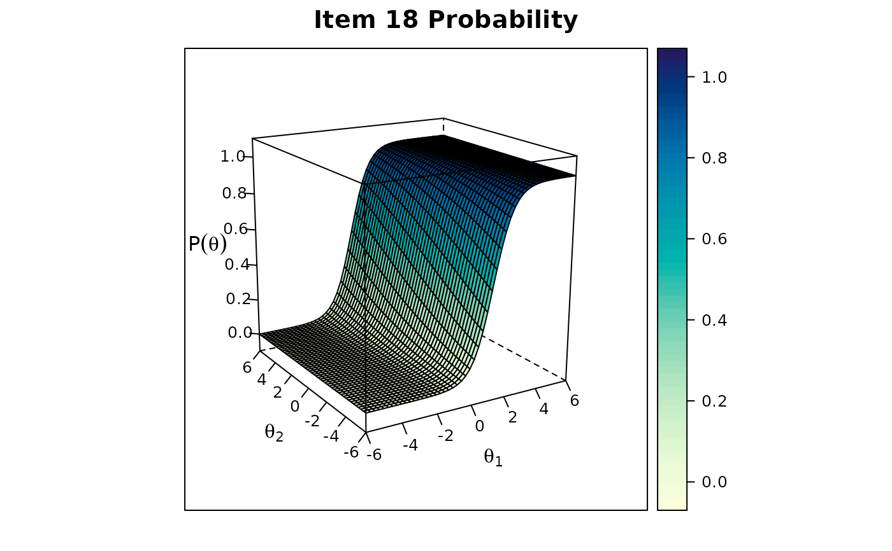

bfactor fits a confirmatory maximum likelihood two-tier/bifactor/testlet model to
dichotomous and polytomous data under the item response theory paradigm.
The IRT models are fit using a dimensional reduction EM algorithm so that regardless
of the number of specific factors estimated the model only uses the number of
factors in the second-tier structure plus 1. For the bifactor model the maximum
number of dimensions is only 2 since the second-tier only consists of a
ubiquitous unidimensional factor. See mirt for appropriate methods to be used
on the objects returned from the estimation.
Arguments
- data
a
matrixordata.framethat consists of numerically ordered data, organized in the form of integers, with missing data coded asNA- model
a numeric vector specifying which factor loads on which item. For example, if for a 4 item test with two specific factors, the first specific factor loads on the first two items and the second specific factor on the last two, then the vector is
c(1,1,2,2). For items that should only load on the second-tier factors (have no specific component)NAvalues may be used as place-holders. These numbers will be translated into a format suitable formirt.model(), combined with the definition inmodel2, with the letter 'S' added to the respective factor numberAlternatively, input can be specified using the
mirt.modelsyntax with the restriction that each item must load on exactly one specific factor (or no specific factors, if it is only predicted by the general factor specified inmodel2)- model2
a two-tier model specification object defined by
mirt.model()or a string to be passed tomirt.model. By default the model will fit a unidimensional model in the second-tier, and therefore be equivalent to the bifactor model- group
a factor variable indicating group membership used for multiple group analyses
- quadpts
number of quadrature nodes to use after accounting for the reduced number of dimensions. Scheme is the same as the one used in
mirt, however it is in regards to the reduced dimensions (e.g., a bifactor model has 2 dimensions to be integrated)- invariance
see
multipleGroupfor details, however, the specific factor variances and means will be constrained according to the dimensional reduction algorithm- ...
additional arguments to be passed to the estimation engine. See
mirtfor more details and examples
Value
function returns an object of class SingleGroupClass
(SingleGroupClass-class) or MultipleGroupClass(MultipleGroupClass-class).
Details
bfactor follows the item factor analysis strategy explicated by
Gibbons and Hedeker (1992), Gibbons et al. (2007), and Cai (2010).
Nested models may be compared via an approximate
chi-squared difference test or by a reduction in AIC or BIC (accessible via
anova). See mirt for more details regarding the
IRT estimation approach used in this package.
The two-tier model has a specific block diagonal covariance structure between the primary and secondary latent traits. Namely, the secondary latent traits are assumed to be orthogonal to all traits and have a fixed variance of 1, while the primary traits can be organized to vary and covary with other primary traits in the model.
$$\Sigma_{two-tier} = \left(\begin{array}{cc} G & 0 \\ 0 & diag(S) \end{array} \right)$$
The bifactor model is a special case of the two-tier model when \(G\) above is a 1x1 matrix, and therefore only 1 primary factor is being modeled. Evaluation of the numerical integrals for the two-tier model requires only \(ncol(G) + 1\) dimensions for integration since the \(S\) second order (or 'specific') factors require only 1 integration grid due to the dimension reduction technique.
Note: for multiple group two-tier analyses only the second-tier means and variances should be freed since the specific factors are not treated independently due to the dimension reduction technique.
References
Cai, L. (2010). A two-tier full-information item factor analysis model with applications. Psychometrika, 75, 581-612.
Chalmers, R., P. (2012). mirt: A Multidimensional Item Response Theory Package for the R Environment. Journal of Statistical Software, 48(6), 1-29. doi:10.18637/jss.v048.i06
Bradlow, E.T., Wainer, H., & Wang, X. (1999). A Bayesian random effects model for testlets. Psychometrika, 64, 153-168.
Gibbons, R. D., & Hedeker, D. R. (1992). Full-information Item Bi-Factor Analysis. Psychometrika, 57, 423-436.
Gibbons, R. D., Darrell, R. B., Hedeker, D., Weiss, D. J., Segawa, E., Bhaumik, D. K., Kupfer, D. J., Frank, E., Grochocinski, V. J., & Stover, A. (2007). Full-Information item bifactor analysis of graded response data. Applied Psychological Measurement, 31, 4-19.
Wainer, H., Bradlow, E.T., & Wang, X. (2007). Testlet response theory and its applications. New York, NY: Cambridge University Press.
Author
Phil Chalmers rphilip.chalmers@gmail.com
Examples
# \donttest{
### load SAT12 and compute bifactor model with 3 specific factors
data(SAT12)
data <- key2binary(SAT12,
key = c(1,4,5,2,3,1,2,1,3,1,2,4,2,1,5,3,4,4,1,4,3,3,4,1,3,5,1,3,1,5,4,5))
specific <- c(2,3,2,3,3,2,1,2,1,1,1,3,1,3,1,2,1,1,3,3,1,1,3,1,3,3,1,3,2,3,1,2)
mod1 <- bfactor(data, specific)
#>
Iteration: 1, Log-Lik: -9703.103, Max-Change: 0.65010
Iteration: 2, Log-Lik: -9481.572, Max-Change: 0.50555
Iteration: 3, Log-Lik: -9458.320, Max-Change: 0.28767
Iteration: 4, Log-Lik: -9450.131, Max-Change: 0.20717
Iteration: 5, Log-Lik: -9445.609, Max-Change: 0.08765
Iteration: 6, Log-Lik: -9442.720, Max-Change: 0.06346
Iteration: 7, Log-Lik: -9440.599, Max-Change: 0.04754
Iteration: 8, Log-Lik: -9439.431, Max-Change: 0.04090
Iteration: 9, Log-Lik: -9438.666, Max-Change: 0.03830
Iteration: 10, Log-Lik: -9437.562, Max-Change: 0.03190
Iteration: 11, Log-Lik: -9437.301, Max-Change: 0.03059
Iteration: 12, Log-Lik: -9437.089, Max-Change: 0.02882
Iteration: 13, Log-Lik: -9436.705, Max-Change: 0.02571
Iteration: 14, Log-Lik: -9436.584, Max-Change: 0.02777
Iteration: 15, Log-Lik: -9436.469, Max-Change: 0.02350
Iteration: 16, Log-Lik: -9436.281, Max-Change: 0.02284
Iteration: 17, Log-Lik: -9436.201, Max-Change: 0.02076
Iteration: 18, Log-Lik: -9436.132, Max-Change: 0.02112
Iteration: 19, Log-Lik: -9435.919, Max-Change: 0.01778
Iteration: 20, Log-Lik: -9435.869, Max-Change: 0.01835
Iteration: 21, Log-Lik: -9435.826, Max-Change: 0.01693
Iteration: 22, Log-Lik: -9435.785, Max-Change: 0.01709
Iteration: 23, Log-Lik: -9435.748, Max-Change: 0.01631
Iteration: 24, Log-Lik: -9435.713, Max-Change: 0.01561
Iteration: 25, Log-Lik: -9435.540, Max-Change: 0.01433
Iteration: 26, Log-Lik: -9435.518, Max-Change: 0.01312
Iteration: 27, Log-Lik: -9435.498, Max-Change: 0.01295
Iteration: 28, Log-Lik: -9435.390, Max-Change: 0.00968
Iteration: 29, Log-Lik: -9435.378, Max-Change: 0.00944
Iteration: 30, Log-Lik: -9435.366, Max-Change: 0.00923
Iteration: 31, Log-Lik: -9435.303, Max-Change: 0.00811
Iteration: 32, Log-Lik: -9435.295, Max-Change: 0.00794
Iteration: 33, Log-Lik: -9435.287, Max-Change: 0.00777
Iteration: 34, Log-Lik: -9435.243, Max-Change: 0.00681
Iteration: 35, Log-Lik: -9435.237, Max-Change: 0.00659
Iteration: 36, Log-Lik: -9435.231, Max-Change: 0.00656
Iteration: 37, Log-Lik: -9435.200, Max-Change: 0.00593
Iteration: 38, Log-Lik: -9435.195, Max-Change: 0.00598
Iteration: 39, Log-Lik: -9435.190, Max-Change: 0.00582
Iteration: 40, Log-Lik: -9435.166, Max-Change: 0.00480
Iteration: 41, Log-Lik: -9435.163, Max-Change: 0.00472
Iteration: 42, Log-Lik: -9435.160, Max-Change: 0.00474
Iteration: 43, Log-Lik: -9435.142, Max-Change: 0.00346
Iteration: 44, Log-Lik: -9435.140, Max-Change: 0.00426
Iteration: 45, Log-Lik: -9435.138, Max-Change: 0.00420
Iteration: 46, Log-Lik: -9435.124, Max-Change: 0.00299
Iteration: 47, Log-Lik: -9435.122, Max-Change: 0.00288
Iteration: 48, Log-Lik: -9435.121, Max-Change: 0.00285
Iteration: 49, Log-Lik: -9435.112, Max-Change: 0.00396
Iteration: 50, Log-Lik: -9435.111, Max-Change: 0.00247
Iteration: 51, Log-Lik: -9435.110, Max-Change: 0.00409
Iteration: 52, Log-Lik: -9435.107, Max-Change: 0.00250
Iteration: 53, Log-Lik: -9435.106, Max-Change: 0.00227
Iteration: 54, Log-Lik: -9435.104, Max-Change: 0.00249
Iteration: 55, Log-Lik: -9435.101, Max-Change: 0.00359
Iteration: 56, Log-Lik: -9435.099, Max-Change: 0.00216
Iteration: 57, Log-Lik: -9435.098, Max-Change: 0.00207
Iteration: 58, Log-Lik: -9435.094, Max-Change: 0.00217
Iteration: 59, Log-Lik: -9435.093, Max-Change: 0.00410
Iteration: 60, Log-Lik: -9435.092, Max-Change: 0.00363
Iteration: 61, Log-Lik: -9435.089, Max-Change: 0.00190
Iteration: 62, Log-Lik: -9435.087, Max-Change: 0.00175
Iteration: 63, Log-Lik: -9435.087, Max-Change: 0.00174
Iteration: 64, Log-Lik: -9435.082, Max-Change: 0.00171
Iteration: 65, Log-Lik: -9435.082, Max-Change: 0.00169
Iteration: 66, Log-Lik: -9435.081, Max-Change: 0.00167
Iteration: 67, Log-Lik: -9435.078, Max-Change: 0.00323
Iteration: 68, Log-Lik: -9435.077, Max-Change: 0.00152
Iteration: 69, Log-Lik: -9435.076, Max-Change: 0.00149
Iteration: 70, Log-Lik: -9435.073, Max-Change: 0.00294
Iteration: 71, Log-Lik: -9435.072, Max-Change: 0.00290
Iteration: 72, Log-Lik: -9435.072, Max-Change: 0.00136
Iteration: 73, Log-Lik: -9435.071, Max-Change: 0.00134
Iteration: 74, Log-Lik: -9435.071, Max-Change: 0.00277
Iteration: 75, Log-Lik: -9435.070, Max-Change: 0.00131
Iteration: 76, Log-Lik: -9435.070, Max-Change: 0.00129
Iteration: 77, Log-Lik: -9435.070, Max-Change: 0.00267
Iteration: 78, Log-Lik: -9435.069, Max-Change: 0.00126
Iteration: 79, Log-Lik: -9435.069, Max-Change: 0.00124
Iteration: 80, Log-Lik: -9435.068, Max-Change: 0.00257
Iteration: 81, Log-Lik: -9435.068, Max-Change: 0.00121
Iteration: 82, Log-Lik: -9435.067, Max-Change: 0.00120
Iteration: 83, Log-Lik: -9435.067, Max-Change: 0.00047
Iteration: 84, Log-Lik: -9435.067, Max-Change: 0.00045
Iteration: 85, Log-Lik: -9435.066, Max-Change: 0.00210
Iteration: 86, Log-Lik: -9435.066, Max-Change: 0.00043
Iteration: 87, Log-Lik: -9435.065, Max-Change: 0.00214
Iteration: 88, Log-Lik: -9435.065, Max-Change: 0.00200
Iteration: 89, Log-Lik: -9435.064, Max-Change: 0.00227
Iteration: 90, Log-Lik: -9435.064, Max-Change: 0.00067
Iteration: 91, Log-Lik: -9435.064, Max-Change: 0.00045
Iteration: 92, Log-Lik: -9435.063, Max-Change: 0.00203
Iteration: 93, Log-Lik: -9435.063, Max-Change: 0.00037
Iteration: 94, Log-Lik: -9435.063, Max-Change: 0.00187
Iteration: 95, Log-Lik: -9435.063, Max-Change: 0.00220
Iteration: 96, Log-Lik: -9435.062, Max-Change: 0.00061
Iteration: 97, Log-Lik: -9435.062, Max-Change: 0.00042
Iteration: 98, Log-Lik: -9435.062, Max-Change: 0.00192
Iteration: 99, Log-Lik: -9435.061, Max-Change: 0.00035
Iteration: 100, Log-Lik: -9435.061, Max-Change: 0.00174
Iteration: 101, Log-Lik: -9435.061, Max-Change: 0.00095
Iteration: 102, Log-Lik: -9435.061, Max-Change: 0.00180
Iteration: 103, Log-Lik: -9435.061, Max-Change: 0.00075
Iteration: 104, Log-Lik: -9435.060, Max-Change: 0.00170
Iteration: 105, Log-Lik: -9435.060, Max-Change: 0.00049
Iteration: 106, Log-Lik: -9435.060, Max-Change: 0.00034
Iteration: 107, Log-Lik: -9435.060, Max-Change: 0.00169
Iteration: 108, Log-Lik: -9435.060, Max-Change: 0.00164
Iteration: 109, Log-Lik: -9435.059, Max-Change: 0.00251
Iteration: 110, Log-Lik: -9435.059, Max-Change: 0.00045
Iteration: 111, Log-Lik: -9435.059, Max-Change: 0.00162
Iteration: 112, Log-Lik: -9435.058, Max-Change: 0.00043
Iteration: 113, Log-Lik: -9435.058, Max-Change: 0.00145
Iteration: 114, Log-Lik: -9435.058, Max-Change: 0.00195
Iteration: 115, Log-Lik: -9435.058, Max-Change: 0.00158
Iteration: 116, Log-Lik: -9435.057, Max-Change: 0.00035
Iteration: 117, Log-Lik: -9435.057, Max-Change: 0.00030
Iteration: 118, Log-Lik: -9435.057, Max-Change: 0.00146
Iteration: 119, Log-Lik: -9435.057, Max-Change: 0.00137
Iteration: 120, Log-Lik: -9435.057, Max-Change: 0.00028
Iteration: 121, Log-Lik: -9435.057, Max-Change: 0.00139
Iteration: 122, Log-Lik: -9435.057, Max-Change: 0.00067
Iteration: 123, Log-Lik: -9435.057, Max-Change: 0.00134
Iteration: 124, Log-Lik: -9435.056, Max-Change: 0.00045
Iteration: 125, Log-Lik: -9435.056, Max-Change: 0.00132
Iteration: 126, Log-Lik: -9435.056, Max-Change: 0.00026
Iteration: 127, Log-Lik: -9435.056, Max-Change: 0.00129
Iteration: 128, Log-Lik: -9435.056, Max-Change: 0.00080
Iteration: 129, Log-Lik: -9435.056, Max-Change: 0.00127
Iteration: 130, Log-Lik: -9435.056, Max-Change: 0.00050
Iteration: 131, Log-Lik: -9435.056, Max-Change: 0.00124
Iteration: 132, Log-Lik: -9435.055, Max-Change: 0.00028
Iteration: 133, Log-Lik: -9435.055, Max-Change: 0.00024
Iteration: 134, Log-Lik: -9435.055, Max-Change: 0.00122
Iteration: 135, Log-Lik: -9435.055, Max-Change: 0.00120
Iteration: 136, Log-Lik: -9435.055, Max-Change: 0.00148
Iteration: 137, Log-Lik: -9435.055, Max-Change: 0.00026
Iteration: 138, Log-Lik: -9435.055, Max-Change: 0.00115
Iteration: 139, Log-Lik: -9435.055, Max-Change: 0.00025
Iteration: 140, Log-Lik: -9435.054, Max-Change: 0.00108
Iteration: 141, Log-Lik: -9435.054, Max-Change: 0.00022
Iteration: 142, Log-Lik: -9435.054, Max-Change: 0.00109
Iteration: 143, Log-Lik: -9435.054, Max-Change: 0.00030
Iteration: 144, Log-Lik: -9435.054, Max-Change: 0.00105
Iteration: 145, Log-Lik: -9435.054, Max-Change: 0.00035
Iteration: 146, Log-Lik: -9435.054, Max-Change: 0.00104
Iteration: 147, Log-Lik: -9435.054, Max-Change: 0.00025
Iteration: 148, Log-Lik: -9435.054, Max-Change: 0.00023
Iteration: 149, Log-Lik: -9435.054, Max-Change: 0.00101
Iteration: 150, Log-Lik: -9435.054, Max-Change: 0.00020
Iteration: 151, Log-Lik: -9435.054, Max-Change: 0.00100
Iteration: 152, Log-Lik: -9435.054, Max-Change: 0.00027
Iteration: 153, Log-Lik: -9435.054, Max-Change: 0.00098
Iteration: 154, Log-Lik: -9435.054, Max-Change: 0.00032
Iteration: 155, Log-Lik: -9435.054, Max-Change: 0.00097
Iteration: 156, Log-Lik: -9435.053, Max-Change: 0.00023
Iteration: 157, Log-Lik: -9435.053, Max-Change: 0.00021
Iteration: 158, Log-Lik: -9435.053, Max-Change: 0.00094
Iteration: 159, Log-Lik: -9435.053, Max-Change: 0.00019
Iteration: 160, Log-Lik: -9435.053, Max-Change: 0.00093
Iteration: 161, Log-Lik: -9435.053, Max-Change: 0.00025
Iteration: 162, Log-Lik: -9435.053, Max-Change: 0.00090
Iteration: 163, Log-Lik: -9435.053, Max-Change: 0.00030
Iteration: 164, Log-Lik: -9435.053, Max-Change: 0.00090
Iteration: 165, Log-Lik: -9435.053, Max-Change: 0.00022
Iteration: 166, Log-Lik: -9435.053, Max-Change: 0.00019
Iteration: 167, Log-Lik: -9435.053, Max-Change: 0.00087
Iteration: 168, Log-Lik: -9435.053, Max-Change: 0.00017
Iteration: 169, Log-Lik: -9435.053, Max-Change: 0.00017
Iteration: 170, Log-Lik: -9435.053, Max-Change: 0.00086
Iteration: 171, Log-Lik: -9435.053, Max-Change: 0.00017
Iteration: 172, Log-Lik: -9435.053, Max-Change: 0.00084
Iteration: 173, Log-Lik: -9435.053, Max-Change: 0.00019
Iteration: 174, Log-Lik: -9435.053, Max-Change: 0.00084
Iteration: 175, Log-Lik: -9435.053, Max-Change: 0.00018
Iteration: 176, Log-Lik: -9435.053, Max-Change: 0.00081
Iteration: 177, Log-Lik: -9435.053, Max-Change: 0.00016
Iteration: 178, Log-Lik: -9435.053, Max-Change: 0.00016
Iteration: 179, Log-Lik: -9435.053, Max-Change: 0.00080
Iteration: 180, Log-Lik: -9435.053, Max-Change: 0.00016
Iteration: 181, Log-Lik: -9435.053, Max-Change: 0.00078
Iteration: 182, Log-Lik: -9435.053, Max-Change: 0.00018
Iteration: 183, Log-Lik: -9435.053, Max-Change: 0.00078
Iteration: 184, Log-Lik: -9435.053, Max-Change: 0.00017
Iteration: 185, Log-Lik: -9435.052, Max-Change: 0.00075
Iteration: 186, Log-Lik: -9435.052, Max-Change: 0.00015
Iteration: 187, Log-Lik: -9435.052, Max-Change: 0.00015
Iteration: 188, Log-Lik: -9435.052, Max-Change: 0.00075
Iteration: 189, Log-Lik: -9435.052, Max-Change: 0.00015
Iteration: 190, Log-Lik: -9435.052, Max-Change: 0.00073
Iteration: 191, Log-Lik: -9435.052, Max-Change: 0.00018
Iteration: 192, Log-Lik: -9435.052, Max-Change: 0.00073
Iteration: 193, Log-Lik: -9435.052, Max-Change: 0.00016
Iteration: 194, Log-Lik: -9435.052, Max-Change: 0.00070
Iteration: 195, Log-Lik: -9435.052, Max-Change: 0.00015
Iteration: 196, Log-Lik: -9435.052, Max-Change: 0.00014
Iteration: 197, Log-Lik: -9435.052, Max-Change: 0.00070
Iteration: 198, Log-Lik: -9435.052, Max-Change: 0.00014
Iteration: 199, Log-Lik: -9435.052, Max-Change: 0.00014
Iteration: 200, Log-Lik: -9435.052, Max-Change: 0.00068
Iteration: 201, Log-Lik: -9435.052, Max-Change: 0.00068
Iteration: 202, Log-Lik: -9435.052, Max-Change: 0.00022
Iteration: 203, Log-Lik: -9435.052, Max-Change: 0.00013
Iteration: 204, Log-Lik: -9435.052, Max-Change: 0.00066
Iteration: 205, Log-Lik: -9435.052, Max-Change: 0.00013
Iteration: 206, Log-Lik: -9435.052, Max-Change: 0.00065
Iteration: 207, Log-Lik: -9435.052, Max-Change: 0.00013
Iteration: 208, Log-Lik: -9435.052, Max-Change: 0.00063
Iteration: 209, Log-Lik: -9435.052, Max-Change: 0.00014
Iteration: 210, Log-Lik: -9435.052, Max-Change: 0.00063
Iteration: 211, Log-Lik: -9435.052, Max-Change: 0.00014
Iteration: 212, Log-Lik: -9435.052, Max-Change: 0.00061
Iteration: 213, Log-Lik: -9435.052, Max-Change: 0.00013
Iteration: 214, Log-Lik: -9435.052, Max-Change: 0.00012
Iteration: 215, Log-Lik: -9435.052, Max-Change: 0.00061
Iteration: 216, Log-Lik: -9435.052, Max-Change: 0.00012
Iteration: 217, Log-Lik: -9435.052, Max-Change: 0.00059
Iteration: 218, Log-Lik: -9435.052, Max-Change: 0.00015
Iteration: 219, Log-Lik: -9435.052, Max-Change: 0.00059
Iteration: 220, Log-Lik: -9435.052, Max-Change: 0.00014
Iteration: 221, Log-Lik: -9435.052, Max-Change: 0.00057
Iteration: 222, Log-Lik: -9435.052, Max-Change: 0.00013
Iteration: 223, Log-Lik: -9435.052, Max-Change: 0.00012
Iteration: 224, Log-Lik: -9435.052, Max-Change: 0.00057
Iteration: 225, Log-Lik: -9435.052, Max-Change: 0.00011
Iteration: 226, Log-Lik: -9435.052, Max-Change: 0.00011
Iteration: 227, Log-Lik: -9435.052, Max-Change: 0.00056
Iteration: 228, Log-Lik: -9435.052, Max-Change: 0.00055
Iteration: 229, Log-Lik: -9435.052, Max-Change: 0.00016
Iteration: 230, Log-Lik: -9435.052, Max-Change: 0.00011
Iteration: 231, Log-Lik: -9435.052, Max-Change: 0.00054
Iteration: 232, Log-Lik: -9435.052, Max-Change: 0.00011
Iteration: 233, Log-Lik: -9435.052, Max-Change: 0.00053
Iteration: 234, Log-Lik: -9435.052, Max-Change: 0.00010
Iteration: 235, Log-Lik: -9435.052, Max-Change: 0.00052
Iteration: 236, Log-Lik: -9435.052, Max-Change: 0.00011
Iteration: 237, Log-Lik: -9435.052, Max-Change: 0.00052
Iteration: 238, Log-Lik: -9435.052, Max-Change: 0.00010
Iteration: 239, Log-Lik: -9435.052, Max-Change: 0.00050
Iteration: 240, Log-Lik: -9435.052, Max-Change: 0.00010
Iteration: 241, Log-Lik: -9435.052, Max-Change: 0.00010
Iteration: 242, Log-Lik: -9435.052, Max-Change: 0.00050
Iteration: 243, Log-Lik: -9435.052, Max-Change: 0.00010
summary(mod1)
#> G S1 S2 S3 h2
#> Item.1 0.4078 0.2273 0.21799
#> Item.2 0.6195 0.3391 0.49881
#> Item.3 0.5573 -0.0744 0.31612
#> Item.4 0.2808 0.3101 0.17503
#> Item.5 0.4779 0.2544 0.29311
#> Item.6 0.5341 0.2724 0.35948
#> Item.7 0.4741 0.4210 0.40199
#> Item.8 0.3537 0.2732 0.19971
#> Item.9 0.2181 0.5321 0.33068
#> Item.10 0.4849 0.3792 0.37895
#> Item.11 0.6442 0.3321 0.52536
#> Item.12 0.0699 0.1592 0.03023
#> Item.13 0.5219 0.2743 0.34764
#> Item.14 0.4791 0.4563 0.43776
#> Item.15 0.5985 0.2402 0.41590
#> Item.16 0.3885 0.2049 0.19292
#> Item.17 0.6636 0.1177 0.45423
#> Item.18 0.7163 0.0775 0.51903
#> Item.19 0.4520 0.0198 0.20466
#> Item.20 0.6578 0.1792 0.46478
#> Item.21 0.2806 0.3451 0.19787
#> Item.22 0.7025 -0.0281 0.49425
#> Item.23 0.3236 0.2657 0.17536
#> Item.24 0.5848 0.1030 0.35266
#> Item.25 0.3732 0.3297 0.24799
#> Item.26 0.6430 0.2124 0.45854
#> Item.27 0.7374 0.1554 0.56792
#> Item.28 0.5256 0.0758 0.28199
#> Item.29 0.4185 0.7071 0.67516
#> Item.30 0.2455 -0.0959 0.06946
#> Item.31 0.8333 -0.0872 0.70202
#> Item.32 0.0780 0.0165 0.00635
#>
#> SS loadings: 8.435 1.03 0.748 0.781
#> Proportion Var: 0.264 0.032 0.023 0.024
#>
#> Factor correlations:
#>
#> G S1 S2 S3
#> G 1
#> S1 0 1
#> S2 0 0 1
#> S3 0 0 0 1
itemplot(mod1, 18, drop.zeros = TRUE) #drop the zero slopes to allow plotting

# alternative model definition via ?mirt.model syntax
specific2 <- "S1 = 7,9,10,11,13,15,17,18,21,22,24,27,31
S2 = 1,3,6,8,16,29,32
S3 = 2,4,5,12,14,19,20,23,25,26,28,30"
mod2 <- bfactor(data, specific2)
#>
Iteration: 1, Log-Lik: -9703.103, Max-Change: 0.65010
Iteration: 2, Log-Lik: -9481.572, Max-Change: 0.50555
Iteration: 3, Log-Lik: -9458.320, Max-Change: 0.28767
Iteration: 4, Log-Lik: -9450.131, Max-Change: 0.20717
Iteration: 5, Log-Lik: -9445.609, Max-Change: 0.08765
Iteration: 6, Log-Lik: -9442.720, Max-Change: 0.06346
Iteration: 7, Log-Lik: -9440.599, Max-Change: 0.04754
Iteration: 8, Log-Lik: -9439.431, Max-Change: 0.04090
Iteration: 9, Log-Lik: -9438.666, Max-Change: 0.03830
Iteration: 10, Log-Lik: -9437.562, Max-Change: 0.03190
Iteration: 11, Log-Lik: -9437.301, Max-Change: 0.03059
Iteration: 12, Log-Lik: -9437.089, Max-Change: 0.02882
Iteration: 13, Log-Lik: -9436.705, Max-Change: 0.02571
Iteration: 14, Log-Lik: -9436.584, Max-Change: 0.02777
Iteration: 15, Log-Lik: -9436.469, Max-Change: 0.02350
Iteration: 16, Log-Lik: -9436.281, Max-Change: 0.02284
Iteration: 17, Log-Lik: -9436.201, Max-Change: 0.02076
Iteration: 18, Log-Lik: -9436.132, Max-Change: 0.02112
Iteration: 19, Log-Lik: -9435.919, Max-Change: 0.01778
Iteration: 20, Log-Lik: -9435.869, Max-Change: 0.01835
Iteration: 21, Log-Lik: -9435.826, Max-Change: 0.01693
Iteration: 22, Log-Lik: -9435.785, Max-Change: 0.01709
Iteration: 23, Log-Lik: -9435.748, Max-Change: 0.01631
Iteration: 24, Log-Lik: -9435.713, Max-Change: 0.01561
Iteration: 25, Log-Lik: -9435.540, Max-Change: 0.01433
Iteration: 26, Log-Lik: -9435.518, Max-Change: 0.01312
Iteration: 27, Log-Lik: -9435.498, Max-Change: 0.01295
Iteration: 28, Log-Lik: -9435.390, Max-Change: 0.00968
Iteration: 29, Log-Lik: -9435.378, Max-Change: 0.00944
Iteration: 30, Log-Lik: -9435.366, Max-Change: 0.00923
Iteration: 31, Log-Lik: -9435.303, Max-Change: 0.00811
Iteration: 32, Log-Lik: -9435.295, Max-Change: 0.00794
Iteration: 33, Log-Lik: -9435.287, Max-Change: 0.00777
Iteration: 34, Log-Lik: -9435.243, Max-Change: 0.00681
Iteration: 35, Log-Lik: -9435.237, Max-Change: 0.00659
Iteration: 36, Log-Lik: -9435.231, Max-Change: 0.00656
Iteration: 37, Log-Lik: -9435.200, Max-Change: 0.00593
Iteration: 38, Log-Lik: -9435.195, Max-Change: 0.00598
Iteration: 39, Log-Lik: -9435.190, Max-Change: 0.00582
Iteration: 40, Log-Lik: -9435.166, Max-Change: 0.00480
Iteration: 41, Log-Lik: -9435.163, Max-Change: 0.00472
Iteration: 42, Log-Lik: -9435.160, Max-Change: 0.00474
Iteration: 43, Log-Lik: -9435.142, Max-Change: 0.00346
Iteration: 44, Log-Lik: -9435.140, Max-Change: 0.00426
Iteration: 45, Log-Lik: -9435.138, Max-Change: 0.00420
Iteration: 46, Log-Lik: -9435.124, Max-Change: 0.00299
Iteration: 47, Log-Lik: -9435.122, Max-Change: 0.00288
Iteration: 48, Log-Lik: -9435.121, Max-Change: 0.00285
Iteration: 49, Log-Lik: -9435.112, Max-Change: 0.00396
Iteration: 50, Log-Lik: -9435.111, Max-Change: 0.00247
Iteration: 51, Log-Lik: -9435.110, Max-Change: 0.00409
Iteration: 52, Log-Lik: -9435.107, Max-Change: 0.00250
Iteration: 53, Log-Lik: -9435.106, Max-Change: 0.00227
Iteration: 54, Log-Lik: -9435.104, Max-Change: 0.00249
Iteration: 55, Log-Lik: -9435.101, Max-Change: 0.00359
Iteration: 56, Log-Lik: -9435.099, Max-Change: 0.00216
Iteration: 57, Log-Lik: -9435.098, Max-Change: 0.00207
Iteration: 58, Log-Lik: -9435.094, Max-Change: 0.00217
Iteration: 59, Log-Lik: -9435.093, Max-Change: 0.00410
Iteration: 60, Log-Lik: -9435.092, Max-Change: 0.00363
Iteration: 61, Log-Lik: -9435.089, Max-Change: 0.00190
Iteration: 62, Log-Lik: -9435.087, Max-Change: 0.00175
Iteration: 63, Log-Lik: -9435.087, Max-Change: 0.00174
Iteration: 64, Log-Lik: -9435.082, Max-Change: 0.00171
Iteration: 65, Log-Lik: -9435.082, Max-Change: 0.00169
Iteration: 66, Log-Lik: -9435.081, Max-Change: 0.00167
Iteration: 67, Log-Lik: -9435.078, Max-Change: 0.00323
Iteration: 68, Log-Lik: -9435.077, Max-Change: 0.00152
Iteration: 69, Log-Lik: -9435.076, Max-Change: 0.00149
Iteration: 70, Log-Lik: -9435.073, Max-Change: 0.00294
Iteration: 71, Log-Lik: -9435.072, Max-Change: 0.00290
Iteration: 72, Log-Lik: -9435.072, Max-Change: 0.00136
Iteration: 73, Log-Lik: -9435.071, Max-Change: 0.00134
Iteration: 74, Log-Lik: -9435.071, Max-Change: 0.00277
Iteration: 75, Log-Lik: -9435.070, Max-Change: 0.00131
Iteration: 76, Log-Lik: -9435.070, Max-Change: 0.00129
Iteration: 77, Log-Lik: -9435.070, Max-Change: 0.00267
Iteration: 78, Log-Lik: -9435.069, Max-Change: 0.00126
Iteration: 79, Log-Lik: -9435.069, Max-Change: 0.00124
Iteration: 80, Log-Lik: -9435.068, Max-Change: 0.00257
Iteration: 81, Log-Lik: -9435.068, Max-Change: 0.00121
Iteration: 82, Log-Lik: -9435.067, Max-Change: 0.00120
Iteration: 83, Log-Lik: -9435.067, Max-Change: 0.00047
Iteration: 84, Log-Lik: -9435.067, Max-Change: 0.00045
Iteration: 85, Log-Lik: -9435.066, Max-Change: 0.00210
Iteration: 86, Log-Lik: -9435.066, Max-Change: 0.00043
Iteration: 87, Log-Lik: -9435.065, Max-Change: 0.00214
Iteration: 88, Log-Lik: -9435.065, Max-Change: 0.00200
Iteration: 89, Log-Lik: -9435.064, Max-Change: 0.00227
Iteration: 90, Log-Lik: -9435.064, Max-Change: 0.00067
Iteration: 91, Log-Lik: -9435.064, Max-Change: 0.00045
Iteration: 92, Log-Lik: -9435.063, Max-Change: 0.00203
Iteration: 93, Log-Lik: -9435.063, Max-Change: 0.00037
Iteration: 94, Log-Lik: -9435.063, Max-Change: 0.00187
Iteration: 95, Log-Lik: -9435.063, Max-Change: 0.00220
Iteration: 96, Log-Lik: -9435.062, Max-Change: 0.00061
Iteration: 97, Log-Lik: -9435.062, Max-Change: 0.00042
Iteration: 98, Log-Lik: -9435.062, Max-Change: 0.00192
Iteration: 99, Log-Lik: -9435.061, Max-Change: 0.00035
Iteration: 100, Log-Lik: -9435.061, Max-Change: 0.00174
Iteration: 101, Log-Lik: -9435.061, Max-Change: 0.00095
Iteration: 102, Log-Lik: -9435.061, Max-Change: 0.00180
Iteration: 103, Log-Lik: -9435.061, Max-Change: 0.00075
Iteration: 104, Log-Lik: -9435.060, Max-Change: 0.00170
Iteration: 105, Log-Lik: -9435.060, Max-Change: 0.00049
Iteration: 106, Log-Lik: -9435.060, Max-Change: 0.00034
Iteration: 107, Log-Lik: -9435.060, Max-Change: 0.00169
Iteration: 108, Log-Lik: -9435.060, Max-Change: 0.00164
Iteration: 109, Log-Lik: -9435.059, Max-Change: 0.00251
Iteration: 110, Log-Lik: -9435.059, Max-Change: 0.00045
Iteration: 111, Log-Lik: -9435.059, Max-Change: 0.00162
Iteration: 112, Log-Lik: -9435.058, Max-Change: 0.00043
Iteration: 113, Log-Lik: -9435.058, Max-Change: 0.00145
Iteration: 114, Log-Lik: -9435.058, Max-Change: 0.00195
Iteration: 115, Log-Lik: -9435.058, Max-Change: 0.00158
Iteration: 116, Log-Lik: -9435.057, Max-Change: 0.00035
Iteration: 117, Log-Lik: -9435.057, Max-Change: 0.00030
Iteration: 118, Log-Lik: -9435.057, Max-Change: 0.00146
Iteration: 119, Log-Lik: -9435.057, Max-Change: 0.00137
Iteration: 120, Log-Lik: -9435.057, Max-Change: 0.00028
Iteration: 121, Log-Lik: -9435.057, Max-Change: 0.00139
Iteration: 122, Log-Lik: -9435.057, Max-Change: 0.00067
Iteration: 123, Log-Lik: -9435.057, Max-Change: 0.00134
Iteration: 124, Log-Lik: -9435.056, Max-Change: 0.00045
Iteration: 125, Log-Lik: -9435.056, Max-Change: 0.00132
Iteration: 126, Log-Lik: -9435.056, Max-Change: 0.00026
Iteration: 127, Log-Lik: -9435.056, Max-Change: 0.00129
Iteration: 128, Log-Lik: -9435.056, Max-Change: 0.00080
Iteration: 129, Log-Lik: -9435.056, Max-Change: 0.00127
Iteration: 130, Log-Lik: -9435.056, Max-Change: 0.00050
Iteration: 131, Log-Lik: -9435.056, Max-Change: 0.00124
Iteration: 132, Log-Lik: -9435.055, Max-Change: 0.00028
Iteration: 133, Log-Lik: -9435.055, Max-Change: 0.00024
Iteration: 134, Log-Lik: -9435.055, Max-Change: 0.00122
Iteration: 135, Log-Lik: -9435.055, Max-Change: 0.00120
Iteration: 136, Log-Lik: -9435.055, Max-Change: 0.00148
Iteration: 137, Log-Lik: -9435.055, Max-Change: 0.00026
Iteration: 138, Log-Lik: -9435.055, Max-Change: 0.00115
Iteration: 139, Log-Lik: -9435.055, Max-Change: 0.00025
Iteration: 140, Log-Lik: -9435.054, Max-Change: 0.00108
Iteration: 141, Log-Lik: -9435.054, Max-Change: 0.00022
Iteration: 142, Log-Lik: -9435.054, Max-Change: 0.00109
Iteration: 143, Log-Lik: -9435.054, Max-Change: 0.00030
Iteration: 144, Log-Lik: -9435.054, Max-Change: 0.00105
Iteration: 145, Log-Lik: -9435.054, Max-Change: 0.00035
Iteration: 146, Log-Lik: -9435.054, Max-Change: 0.00104
Iteration: 147, Log-Lik: -9435.054, Max-Change: 0.00025
Iteration: 148, Log-Lik: -9435.054, Max-Change: 0.00023
Iteration: 149, Log-Lik: -9435.054, Max-Change: 0.00101
Iteration: 150, Log-Lik: -9435.054, Max-Change: 0.00020
Iteration: 151, Log-Lik: -9435.054, Max-Change: 0.00100
Iteration: 152, Log-Lik: -9435.054, Max-Change: 0.00027
Iteration: 153, Log-Lik: -9435.054, Max-Change: 0.00098
Iteration: 154, Log-Lik: -9435.054, Max-Change: 0.00032
Iteration: 155, Log-Lik: -9435.054, Max-Change: 0.00097
Iteration: 156, Log-Lik: -9435.053, Max-Change: 0.00023
Iteration: 157, Log-Lik: -9435.053, Max-Change: 0.00021
Iteration: 158, Log-Lik: -9435.053, Max-Change: 0.00094
Iteration: 159, Log-Lik: -9435.053, Max-Change: 0.00019
Iteration: 160, Log-Lik: -9435.053, Max-Change: 0.00093
Iteration: 161, Log-Lik: -9435.053, Max-Change: 0.00025
Iteration: 162, Log-Lik: -9435.053, Max-Change: 0.00090
Iteration: 163, Log-Lik: -9435.053, Max-Change: 0.00030
Iteration: 164, Log-Lik: -9435.053, Max-Change: 0.00090
Iteration: 165, Log-Lik: -9435.053, Max-Change: 0.00022
Iteration: 166, Log-Lik: -9435.053, Max-Change: 0.00019
Iteration: 167, Log-Lik: -9435.053, Max-Change: 0.00087
Iteration: 168, Log-Lik: -9435.053, Max-Change: 0.00017
Iteration: 169, Log-Lik: -9435.053, Max-Change: 0.00017
Iteration: 170, Log-Lik: -9435.053, Max-Change: 0.00086
Iteration: 171, Log-Lik: -9435.053, Max-Change: 0.00017
Iteration: 172, Log-Lik: -9435.053, Max-Change: 0.00084
Iteration: 173, Log-Lik: -9435.053, Max-Change: 0.00019
Iteration: 174, Log-Lik: -9435.053, Max-Change: 0.00084
Iteration: 175, Log-Lik: -9435.053, Max-Change: 0.00018
Iteration: 176, Log-Lik: -9435.053, Max-Change: 0.00081
Iteration: 177, Log-Lik: -9435.053, Max-Change: 0.00016
Iteration: 178, Log-Lik: -9435.053, Max-Change: 0.00016
Iteration: 179, Log-Lik: -9435.053, Max-Change: 0.00080
Iteration: 180, Log-Lik: -9435.053, Max-Change: 0.00016
Iteration: 181, Log-Lik: -9435.053, Max-Change: 0.00078
Iteration: 182, Log-Lik: -9435.053, Max-Change: 0.00018
Iteration: 183, Log-Lik: -9435.053, Max-Change: 0.00078
Iteration: 184, Log-Lik: -9435.053, Max-Change: 0.00017
Iteration: 185, Log-Lik: -9435.052, Max-Change: 0.00075
Iteration: 186, Log-Lik: -9435.052, Max-Change: 0.00015
Iteration: 187, Log-Lik: -9435.052, Max-Change: 0.00015
Iteration: 188, Log-Lik: -9435.052, Max-Change: 0.00075
Iteration: 189, Log-Lik: -9435.052, Max-Change: 0.00015
Iteration: 190, Log-Lik: -9435.052, Max-Change: 0.00073
Iteration: 191, Log-Lik: -9435.052, Max-Change: 0.00018
Iteration: 192, Log-Lik: -9435.052, Max-Change: 0.00073
Iteration: 193, Log-Lik: -9435.052, Max-Change: 0.00016
Iteration: 194, Log-Lik: -9435.052, Max-Change: 0.00070
Iteration: 195, Log-Lik: -9435.052, Max-Change: 0.00015
Iteration: 196, Log-Lik: -9435.052, Max-Change: 0.00014
Iteration: 197, Log-Lik: -9435.052, Max-Change: 0.00070
Iteration: 198, Log-Lik: -9435.052, Max-Change: 0.00014
Iteration: 199, Log-Lik: -9435.052, Max-Change: 0.00014
Iteration: 200, Log-Lik: -9435.052, Max-Change: 0.00068
Iteration: 201, Log-Lik: -9435.052, Max-Change: 0.00068
Iteration: 202, Log-Lik: -9435.052, Max-Change: 0.00022
Iteration: 203, Log-Lik: -9435.052, Max-Change: 0.00013
Iteration: 204, Log-Lik: -9435.052, Max-Change: 0.00066
Iteration: 205, Log-Lik: -9435.052, Max-Change: 0.00013
Iteration: 206, Log-Lik: -9435.052, Max-Change: 0.00065
Iteration: 207, Log-Lik: -9435.052, Max-Change: 0.00013
Iteration: 208, Log-Lik: -9435.052, Max-Change: 0.00063
Iteration: 209, Log-Lik: -9435.052, Max-Change: 0.00014
Iteration: 210, Log-Lik: -9435.052, Max-Change: 0.00063
Iteration: 211, Log-Lik: -9435.052, Max-Change: 0.00014
Iteration: 212, Log-Lik: -9435.052, Max-Change: 0.00061
Iteration: 213, Log-Lik: -9435.052, Max-Change: 0.00013
Iteration: 214, Log-Lik: -9435.052, Max-Change: 0.00012
Iteration: 215, Log-Lik: -9435.052, Max-Change: 0.00061
Iteration: 216, Log-Lik: -9435.052, Max-Change: 0.00012
Iteration: 217, Log-Lik: -9435.052, Max-Change: 0.00059
Iteration: 218, Log-Lik: -9435.052, Max-Change: 0.00015
Iteration: 219, Log-Lik: -9435.052, Max-Change: 0.00059
Iteration: 220, Log-Lik: -9435.052, Max-Change: 0.00014
Iteration: 221, Log-Lik: -9435.052, Max-Change: 0.00057
Iteration: 222, Log-Lik: -9435.052, Max-Change: 0.00013
Iteration: 223, Log-Lik: -9435.052, Max-Change: 0.00012
Iteration: 224, Log-Lik: -9435.052, Max-Change: 0.00057
Iteration: 225, Log-Lik: -9435.052, Max-Change: 0.00011
Iteration: 226, Log-Lik: -9435.052, Max-Change: 0.00011
Iteration: 227, Log-Lik: -9435.052, Max-Change: 0.00056
Iteration: 228, Log-Lik: -9435.052, Max-Change: 0.00055
Iteration: 229, Log-Lik: -9435.052, Max-Change: 0.00016
Iteration: 230, Log-Lik: -9435.052, Max-Change: 0.00011
Iteration: 231, Log-Lik: -9435.052, Max-Change: 0.00054
Iteration: 232, Log-Lik: -9435.052, Max-Change: 0.00011
Iteration: 233, Log-Lik: -9435.052, Max-Change: 0.00053
Iteration: 234, Log-Lik: -9435.052, Max-Change: 0.00010
Iteration: 235, Log-Lik: -9435.052, Max-Change: 0.00052
Iteration: 236, Log-Lik: -9435.052, Max-Change: 0.00011
Iteration: 237, Log-Lik: -9435.052, Max-Change: 0.00052
Iteration: 238, Log-Lik: -9435.052, Max-Change: 0.00010
Iteration: 239, Log-Lik: -9435.052, Max-Change: 0.00050
Iteration: 240, Log-Lik: -9435.052, Max-Change: 0.00010
Iteration: 241, Log-Lik: -9435.052, Max-Change: 0.00010
Iteration: 242, Log-Lik: -9435.052, Max-Change: 0.00050
Iteration: 243, Log-Lik: -9435.052, Max-Change: 0.00010
anova(mod1, mod2) # same
#> AIC SABIC HQ BIC logLik X2 df p
#> mod1 19062.1 19179.44 19226.42 19484.21 -9435.052
#> mod2 19062.1 19179.44 19226.42 19484.21 -9435.052 0 0 NaN
# also equivalent using item names instead (not run)
specific3 <- "S1 = Item.7, Item.9, Item.10, Item.11, Item.13, Item.15,
Item.17, Item.18, Item.21, Item.22, Item.24, Item.27, Item.31
S2 = Item.1, Item.3, Item.6, Item.8, Item.16, Item.29, Item.32
S3 = Item.2, Item.4, Item.5, Item.12, Item.14, Item.19,
Item.20, Item.23, Item.25, Item.26, Item.28, Item.30"
# mod3 <- bfactor(data, specific3)
# anova(mod1, mod2, mod3) # all same
### Try with fixed guessing parameters added
guess <- rep(.1,32)
mod2 <- bfactor(data, specific, guess = guess)
#>
Iteration: 1, Log-Lik: -9651.720, Max-Change: 0.92991
Iteration: 2, Log-Lik: -9480.332, Max-Change: 1.20848
Iteration: 3, Log-Lik: -9449.888, Max-Change: 0.24028
Iteration: 4, Log-Lik: -9435.223, Max-Change: 0.18145
Iteration: 5, Log-Lik: -9426.874, Max-Change: 0.11058
Iteration: 6, Log-Lik: -9421.824, Max-Change: 0.10213
Iteration: 7, Log-Lik: -9418.618, Max-Change: 0.09365
Iteration: 8, Log-Lik: -9416.560, Max-Change: 0.08221
Iteration: 9, Log-Lik: -9415.208, Max-Change: 0.07143
Iteration: 10, Log-Lik: -9412.545, Max-Change: 0.03778
Iteration: 11, Log-Lik: -9412.286, Max-Change: 0.03071
Iteration: 12, Log-Lik: -9412.068, Max-Change: 0.02914
Iteration: 13, Log-Lik: -9411.028, Max-Change: 0.02164
Iteration: 14, Log-Lik: -9410.894, Max-Change: 0.02220
Iteration: 15, Log-Lik: -9410.770, Max-Change: 0.02453
Iteration: 16, Log-Lik: -9410.387, Max-Change: 0.01849
Iteration: 17, Log-Lik: -9410.297, Max-Change: 0.01761
Iteration: 18, Log-Lik: -9410.214, Max-Change: 0.01881
Iteration: 19, Log-Lik: -9409.787, Max-Change: 0.02117
Iteration: 20, Log-Lik: -9409.719, Max-Change: 0.01642
Iteration: 21, Log-Lik: -9409.665, Max-Change: 0.01546
Iteration: 22, Log-Lik: -9409.464, Max-Change: 0.01380
Iteration: 23, Log-Lik: -9409.422, Max-Change: 0.01377
Iteration: 24, Log-Lik: -9409.387, Max-Change: 0.01295
Iteration: 25, Log-Lik: -9409.221, Max-Change: 0.01297
Iteration: 26, Log-Lik: -9409.191, Max-Change: 0.01140
Iteration: 27, Log-Lik: -9409.168, Max-Change: 0.01121
Iteration: 28, Log-Lik: -9409.057, Max-Change: 0.01174
Iteration: 29, Log-Lik: -9409.036, Max-Change: 0.00822
Iteration: 30, Log-Lik: -9409.022, Max-Change: 0.00789
Iteration: 31, Log-Lik: -9408.950, Max-Change: 0.01059
Iteration: 32, Log-Lik: -9408.936, Max-Change: 0.01141
Iteration: 33, Log-Lik: -9408.927, Max-Change: 0.00913
Iteration: 34, Log-Lik: -9408.916, Max-Change: 0.01069
Iteration: 35, Log-Lik: -9408.908, Max-Change: 0.00646
Iteration: 36, Log-Lik: -9408.901, Max-Change: 0.00614
Iteration: 37, Log-Lik: -9408.863, Max-Change: 0.00541
Iteration: 38, Log-Lik: -9408.858, Max-Change: 0.00531
Iteration: 39, Log-Lik: -9408.853, Max-Change: 0.00514
Iteration: 40, Log-Lik: -9408.829, Max-Change: 0.00456
Iteration: 41, Log-Lik: -9408.826, Max-Change: 0.00363
Iteration: 42, Log-Lik: -9408.823, Max-Change: 0.00346
Iteration: 43, Log-Lik: -9408.820, Max-Change: 0.00317
Iteration: 44, Log-Lik: -9408.817, Max-Change: 0.00329
Iteration: 45, Log-Lik: -9408.815, Max-Change: 0.00340
Iteration: 46, Log-Lik: -9408.805, Max-Change: 0.00596
Iteration: 47, Log-Lik: -9408.802, Max-Change: 0.00324
Iteration: 48, Log-Lik: -9408.800, Max-Change: 0.00295
Iteration: 49, Log-Lik: -9408.795, Max-Change: 0.00447
Iteration: 50, Log-Lik: -9408.793, Max-Change: 0.00301
Iteration: 51, Log-Lik: -9408.792, Max-Change: 0.00271
Iteration: 52, Log-Lik: -9408.789, Max-Change: 0.00428
Iteration: 53, Log-Lik: -9408.788, Max-Change: 0.00258
Iteration: 54, Log-Lik: -9408.787, Max-Change: 0.00233
Iteration: 55, Log-Lik: -9408.785, Max-Change: 0.00211
Iteration: 56, Log-Lik: -9408.784, Max-Change: 0.00233
Iteration: 57, Log-Lik: -9408.783, Max-Change: 0.00223
Iteration: 58, Log-Lik: -9408.781, Max-Change: 0.00043
Iteration: 59, Log-Lik: -9408.780, Max-Change: 0.00039
Iteration: 60, Log-Lik: -9408.780, Max-Change: 0.00190
Iteration: 61, Log-Lik: -9408.780, Max-Change: 0.00172
Iteration: 62, Log-Lik: -9408.780, Max-Change: 0.00177
Iteration: 63, Log-Lik: -9408.779, Max-Change: 0.00046
Iteration: 64, Log-Lik: -9408.779, Max-Change: 0.00038
Iteration: 65, Log-Lik: -9408.779, Max-Change: 0.00172
Iteration: 66, Log-Lik: -9408.779, Max-Change: 0.00170
Iteration: 67, Log-Lik: -9408.779, Max-Change: 0.00196
Iteration: 68, Log-Lik: -9408.778, Max-Change: 0.00073
Iteration: 69, Log-Lik: -9408.778, Max-Change: 0.00175
Iteration: 70, Log-Lik: -9408.778, Max-Change: 0.00042
Iteration: 71, Log-Lik: -9408.778, Max-Change: 0.00144
Iteration: 72, Log-Lik: -9408.778, Max-Change: 0.00154
Iteration: 73, Log-Lik: -9408.778, Max-Change: 0.00080
Iteration: 74, Log-Lik: -9408.778, Max-Change: 0.00139
Iteration: 75, Log-Lik: -9408.777, Max-Change: 0.00032
Iteration: 76, Log-Lik: -9408.777, Max-Change: 0.00029
Iteration: 77, Log-Lik: -9408.777, Max-Change: 0.00142
Iteration: 78, Log-Lik: -9408.777, Max-Change: 0.00132
Iteration: 79, Log-Lik: -9408.777, Max-Change: 0.00044
Iteration: 80, Log-Lik: -9408.777, Max-Change: 0.00134
Iteration: 81, Log-Lik: -9408.777, Max-Change: 0.00026
Iteration: 82, Log-Lik: -9408.777, Max-Change: 0.00025
Iteration: 83, Log-Lik: -9408.777, Max-Change: 0.00124
Iteration: 84, Log-Lik: -9408.777, Max-Change: 0.00125
Iteration: 85, Log-Lik: -9408.777, Max-Change: 0.00035
Iteration: 86, Log-Lik: -9408.777, Max-Change: 0.00117
Iteration: 87, Log-Lik: -9408.776, Max-Change: 0.00024
Iteration: 88, Log-Lik: -9408.776, Max-Change: 0.00023
Iteration: 89, Log-Lik: -9408.776, Max-Change: 0.00116
Iteration: 90, Log-Lik: -9408.776, Max-Change: 0.00022
Iteration: 91, Log-Lik: -9408.776, Max-Change: 0.00110
Iteration: 92, Log-Lik: -9408.776, Max-Change: 0.00025
Iteration: 93, Log-Lik: -9408.776, Max-Change: 0.00108
Iteration: 94, Log-Lik: -9408.776, Max-Change: 0.00032
Iteration: 95, Log-Lik: -9408.776, Max-Change: 0.00102
Iteration: 96, Log-Lik: -9408.776, Max-Change: 0.00025
Iteration: 97, Log-Lik: -9408.776, Max-Change: 0.00021
Iteration: 98, Log-Lik: -9408.776, Max-Change: 0.00099
Iteration: 99, Log-Lik: -9408.776, Max-Change: 0.00019
Iteration: 100, Log-Lik: -9408.776, Max-Change: 0.00019
Iteration: 101, Log-Lik: -9408.776, Max-Change: 0.00095
Iteration: 102, Log-Lik: -9408.776, Max-Change: 0.00092
Iteration: 103, Log-Lik: -9408.776, Max-Change: 0.00025
Iteration: 104, Log-Lik: -9408.776, Max-Change: 0.00089
Iteration: 105, Log-Lik: -9408.776, Max-Change: 0.00019
Iteration: 106, Log-Lik: -9408.776, Max-Change: 0.00017
Iteration: 107, Log-Lik: -9408.776, Max-Change: 0.00086
Iteration: 108, Log-Lik: -9408.776, Max-Change: 0.00017
Iteration: 109, Log-Lik: -9408.776, Max-Change: 0.00083
Iteration: 110, Log-Lik: -9408.776, Max-Change: 0.00022
Iteration: 111, Log-Lik: -9408.776, Max-Change: 0.00080
Iteration: 112, Log-Lik: -9408.776, Max-Change: 0.00027
Iteration: 113, Log-Lik: -9408.775, Max-Change: 0.00015
Iteration: 114, Log-Lik: -9408.775, Max-Change: 0.00076
Iteration: 115, Log-Lik: -9408.775, Max-Change: 0.00015
Iteration: 116, Log-Lik: -9408.775, Max-Change: 0.00073
Iteration: 117, Log-Lik: -9408.775, Max-Change: 0.00071
Iteration: 118, Log-Lik: -9408.775, Max-Change: 0.00020
Iteration: 119, Log-Lik: -9408.775, Max-Change: 0.00068
Iteration: 120, Log-Lik: -9408.775, Max-Change: 0.00016
Iteration: 121, Log-Lik: -9408.775, Max-Change: 0.00013
Iteration: 122, Log-Lik: -9408.775, Max-Change: 0.00066
Iteration: 123, Log-Lik: -9408.775, Max-Change: 0.00013
Iteration: 124, Log-Lik: -9408.775, Max-Change: 0.00063
Iteration: 125, Log-Lik: -9408.775, Max-Change: 0.00018
Iteration: 126, Log-Lik: -9408.775, Max-Change: 0.00062
Iteration: 127, Log-Lik: -9408.775, Max-Change: 0.00023
Iteration: 128, Log-Lik: -9408.775, Max-Change: 0.00012
Iteration: 129, Log-Lik: -9408.775, Max-Change: 0.00058
Iteration: 130, Log-Lik: -9408.775, Max-Change: 0.00011
Iteration: 131, Log-Lik: -9408.775, Max-Change: 0.00056
Iteration: 132, Log-Lik: -9408.775, Max-Change: 0.00053
Iteration: 133, Log-Lik: -9408.775, Max-Change: 0.00017
Iteration: 134, Log-Lik: -9408.775, Max-Change: 0.00052
Iteration: 135, Log-Lik: -9408.775, Max-Change: 0.00013
Iteration: 136, Log-Lik: -9408.775, Max-Change: 0.00011
Iteration: 137, Log-Lik: -9408.775, Max-Change: 0.00050
Iteration: 138, Log-Lik: -9408.775, Max-Change: 0.00010
coef(mod2)
#> $Item.1
#> a1 a2 a3 a4 d g u
#> par 1.225 0 0.624 0 -1.822 0.1 1
#>
#> $Item.2
#> a1 a2 a3 a4 d g u
#> par 1.721 0 0 0.954 0.171 0.1 1
#>
#> $Item.3
#> a1 a2 a3 a4 d g u
#> par 2.415 0 -0.459 0 -2.602 0.1 1
#>
#> $Item.4
#> a1 a2 a3 a4 d g u
#> par 0.745 0 0 0.695 -0.989 0.1 1
#>
#> $Item.5
#> a1 a2 a3 a4 d g u
#> par 1.048 0 0 0.603 0.419 0.1 1
#>
#> $Item.6
#> a1 a2 a3 a4 d g u
#> par 3.06 0 0.501 0 -5.002 0.1 1
#>
#> $Item.7
#> a1 a2 a3 a4 d g u
#> par 1.121 0.839 0 0 1.373 0.1 1
#>
#> $Item.8
#> a1 a2 a3 a4 d g u
#> par 1.956 0 1.443 0 -3.772 0.1 1
#>
#> $Item.9
#> a1 a2 a3 a4 d g u
#> par 0.512 1.236 0 0 2.484 0.1 1
#>
#> $Item.10
#> a1 a2 a3 a4 d g u
#> par 1.68 1.506 0 0 -1.031 0.1 1
#>
#> $Item.11
#> a1 a2 a3 a4 d g u
#> par 1.655 0.842 0 0 5.441 0.1 1
#>
#> $Item.12
#> a1 a2 a3 a4 d g u
#> par 0.129 0 0 0.364 -0.641 0.1 1
#>
#> $Item.13
#> a1 a2 a3 a4 d g u
#> par 1.183 0.477 0 0 0.679 0.1 1
#>
#> $Item.14
#> a1 a2 a3 a4 d g u
#> par 1.125 0 0 1.058 1.164 0.1 1
#>
#> $Item.15
#> a1 a2 a3 a4 d g u
#> par 1.435 0.317 0 0 1.863 0.1 1
#>
#> $Item.16
#> a1 a2 a3 a4 d g u
#> par 0.95 0 0.573 0 -0.783 0.1 1
#>
#> $Item.17
#> a1 a2 a3 a4 d g u
#> par 1.547 0.059 0 0 4.112 0.1 1
#>
#> $Item.18
#> a1 a2 a3 a4 d g u
#> par 2.731 0.094 0 0 -1.808 0.1 1
#>
#> $Item.19
#> a1 a2 a3 a4 d g u
#> par 0.918 0 0 0.101 -0.001 0.1 1
#>
#> $Item.20
#> a1 a2 a3 a4 d g u
#> par 1.456 0 0 0.593 2.501 0.1 1
#>
#> $Item.21
#> a1 a2 a3 a4 d g u
#> par 0.596 0.493 0 0 2.49 0.1 1
#>
#> $Item.22
#> a1 a2 a3 a4 d g u
#> par 1.554 -0.242 0 0 3.428 0.1 1
#>
#> $Item.23
#> a1 a2 a3 a4 d g u
#> par 0.908 0 0 0.766 -1.488 0.1 1
#>
#> $Item.24
#> a1 a2 a3 a4 d g u
#> par 1.379 0.001 0 0 1.132 0.1 1
#>
#> $Item.25
#> a1 a2 a3 a4 d g u
#> par 1.03 0 0 1.094 -1.164 0.1 1
#>
#> $Item.26
#> a1 a2 a3 a4 d g u
#> par 1.985 0 0 0.747 -0.663 0.1 1
#>
#> $Item.27
#> a1 a2 a3 a4 d g u
#> par 1.909 0.348 0 0 2.642 0.1 1
#>
#> $Item.28
#> a1 a2 a3 a4 d g u
#> par 1.213 0 0 0.142 -0.097 0.1 1
#>
#> $Item.29
#> a1 a2 a3 a4 d g u
#> par 1.938 0 2.339 0 -2.209 0.1 1
#>
#> $Item.30
#> a1 a2 a3 a4 d g u
#> par 0.479 0 0 -0.128 -0.527 0.1 1
#>
#> $Item.31
#> a1 a2 a3 a4 d g u
#> par 3.173 -0.82 0 0 3.316 0.1 1
#>
#> $Item.32
#> a1 a2 a3 a4 d g u
#> par 0.534 0 -0.053 0 -2.786 0.1 1
#>
#> $GroupPars
#> MEAN_1 MEAN_2 MEAN_3 MEAN_4 COV_11 COV_21 COV_31 COV_41 COV_22 COV_32
#> par 0 0 0 0 1 0 0 0 1 0
#> COV_42 COV_33 COV_43 COV_44
#> par 0 1 0 1
#>
anova(mod1, mod2)
#> AIC SABIC HQ BIC logLik X2 df p
#> mod1 19062.10 19179.44 19226.42 19484.21 -9435.052
#> mod2 19009.55 19126.88 19173.87 19431.65 -9408.775 52.553 0 NaN
## don't estimate specific factor for item 32
specific[32] <- NA
mod3 <- bfactor(data, specific)
#>
Iteration: 1, Log-Lik: -9696.182, Max-Change: 0.64066
Iteration: 2, Log-Lik: -9481.315, Max-Change: 0.48875
Iteration: 3, Log-Lik: -9458.092, Max-Change: 0.25252
Iteration: 4, Log-Lik: -9449.944, Max-Change: 0.14539
Iteration: 5, Log-Lik: -9445.257, Max-Change: 0.08467
Iteration: 6, Log-Lik: -9442.401, Max-Change: 0.06329
Iteration: 7, Log-Lik: -9439.818, Max-Change: 0.04752
Iteration: 8, Log-Lik: -9438.876, Max-Change: 0.04281
Iteration: 9, Log-Lik: -9438.236, Max-Change: 0.04059
Iteration: 10, Log-Lik: -9437.119, Max-Change: 0.04977
Iteration: 11, Log-Lik: -9436.921, Max-Change: 0.02966
Iteration: 12, Log-Lik: -9436.762, Max-Change: 0.02807
Iteration: 13, Log-Lik: -9436.172, Max-Change: 0.03727
Iteration: 14, Log-Lik: -9436.103, Max-Change: 0.02064
Iteration: 15, Log-Lik: -9436.044, Max-Change: 0.01981
Iteration: 16, Log-Lik: -9435.966, Max-Change: 0.01948
Iteration: 17, Log-Lik: -9435.917, Max-Change: 0.01834
Iteration: 18, Log-Lik: -9435.872, Max-Change: 0.01830
Iteration: 19, Log-Lik: -9435.744, Max-Change: 0.01601
Iteration: 20, Log-Lik: -9435.708, Max-Change: 0.01605
Iteration: 21, Log-Lik: -9435.677, Max-Change: 0.01521
Iteration: 22, Log-Lik: -9435.522, Max-Change: 0.01249
Iteration: 23, Log-Lik: -9435.502, Max-Change: 0.01297
Iteration: 24, Log-Lik: -9435.483, Max-Change: 0.01086
Iteration: 25, Log-Lik: -9435.430, Max-Change: 0.01148
Iteration: 26, Log-Lik: -9435.415, Max-Change: 0.00971
Iteration: 27, Log-Lik: -9435.402, Max-Change: 0.00951
Iteration: 28, Log-Lik: -9435.334, Max-Change: 0.00836
Iteration: 29, Log-Lik: -9435.325, Max-Change: 0.00817
Iteration: 30, Log-Lik: -9435.316, Max-Change: 0.00800
Iteration: 31, Log-Lik: -9435.269, Max-Change: 0.00703
Iteration: 32, Log-Lik: -9435.262, Max-Change: 0.00690
Iteration: 33, Log-Lik: -9435.256, Max-Change: 0.00677
Iteration: 34, Log-Lik: -9435.221, Max-Change: 0.00597
Iteration: 35, Log-Lik: -9435.216, Max-Change: 0.00603
Iteration: 36, Log-Lik: -9435.212, Max-Change: 0.00592
Iteration: 37, Log-Lik: -9435.186, Max-Change: 0.00540
Iteration: 38, Log-Lik: -9435.182, Max-Change: 0.00484
Iteration: 39, Log-Lik: -9435.179, Max-Change: 0.00513
Iteration: 40, Log-Lik: -9435.159, Max-Change: 0.00430
Iteration: 41, Log-Lik: -9435.157, Max-Change: 0.00416
Iteration: 42, Log-Lik: -9435.154, Max-Change: 0.00417
Iteration: 43, Log-Lik: -9435.140, Max-Change: 0.00305
Iteration: 44, Log-Lik: -9435.138, Max-Change: 0.00296
Iteration: 45, Log-Lik: -9435.136, Max-Change: 0.00291
Iteration: 46, Log-Lik: -9435.127, Max-Change: 0.00414
Iteration: 47, Log-Lik: -9435.126, Max-Change: 0.00252
Iteration: 48, Log-Lik: -9435.124, Max-Change: 0.00415
Iteration: 49, Log-Lik: -9435.122, Max-Change: 0.00431
Iteration: 50, Log-Lik: -9435.120, Max-Change: 0.00234
Iteration: 51, Log-Lik: -9435.118, Max-Change: 0.00397
Iteration: 52, Log-Lik: -9435.116, Max-Change: 0.00225
Iteration: 53, Log-Lik: -9435.115, Max-Change: 0.00213
Iteration: 54, Log-Lik: -9435.114, Max-Change: 0.00210
Iteration: 55, Log-Lik: -9435.107, Max-Change: 0.00223
Iteration: 56, Log-Lik: -9435.106, Max-Change: 0.00421
Iteration: 57, Log-Lik: -9435.105, Max-Change: 0.00373
Iteration: 58, Log-Lik: -9435.102, Max-Change: 0.00195
Iteration: 59, Log-Lik: -9435.100, Max-Change: 0.00178
Iteration: 60, Log-Lik: -9435.099, Max-Change: 0.00176
Iteration: 61, Log-Lik: -9435.095, Max-Change: 0.00171
Iteration: 62, Log-Lik: -9435.094, Max-Change: 0.00171
Iteration: 63, Log-Lik: -9435.093, Max-Change: 0.00169
Iteration: 64, Log-Lik: -9435.090, Max-Change: 0.00329
Iteration: 65, Log-Lik: -9435.089, Max-Change: 0.00154
Iteration: 66, Log-Lik: -9435.088, Max-Change: 0.00152
Iteration: 67, Log-Lik: -9435.085, Max-Change: 0.00299
Iteration: 68, Log-Lik: -9435.084, Max-Change: 0.00295
Iteration: 69, Log-Lik: -9435.083, Max-Change: 0.00138
Iteration: 70, Log-Lik: -9435.083, Max-Change: 0.00136
Iteration: 71, Log-Lik: -9435.083, Max-Change: 0.00283
Iteration: 72, Log-Lik: -9435.082, Max-Change: 0.00133
Iteration: 73, Log-Lik: -9435.081, Max-Change: 0.00132
Iteration: 74, Log-Lik: -9435.081, Max-Change: 0.00272
Iteration: 75, Log-Lik: -9435.080, Max-Change: 0.00128
Iteration: 76, Log-Lik: -9435.080, Max-Change: 0.00127
Iteration: 77, Log-Lik: -9435.080, Max-Change: 0.00263
Iteration: 78, Log-Lik: -9435.079, Max-Change: 0.00124
Iteration: 79, Log-Lik: -9435.079, Max-Change: 0.00122
Iteration: 80, Log-Lik: -9435.078, Max-Change: 0.00253
Iteration: 81, Log-Lik: -9435.078, Max-Change: 0.00119
Iteration: 82, Log-Lik: -9435.077, Max-Change: 0.00046
Iteration: 83, Log-Lik: -9435.077, Max-Change: 0.00045
Iteration: 84, Log-Lik: -9435.077, Max-Change: 0.00044
Iteration: 85, Log-Lik: -9435.076, Max-Change: 0.00205
Iteration: 86, Log-Lik: -9435.076, Max-Change: 0.00212
Iteration: 87, Log-Lik: -9435.075, Max-Change: 0.00039
Iteration: 88, Log-Lik: -9435.075, Max-Change: 0.00198
Iteration: 89, Log-Lik: -9435.075, Max-Change: 0.00227
Iteration: 90, Log-Lik: -9435.074, Max-Change: 0.00070
Iteration: 91, Log-Lik: -9435.074, Max-Change: 0.00046
Iteration: 92, Log-Lik: -9435.074, Max-Change: 0.00201
Iteration: 93, Log-Lik: -9435.073, Max-Change: 0.00037
Iteration: 94, Log-Lik: -9435.073, Max-Change: 0.00185
Iteration: 95, Log-Lik: -9435.073, Max-Change: 0.00218
Iteration: 96, Log-Lik: -9435.072, Max-Change: 0.00057
Iteration: 97, Log-Lik: -9435.072, Max-Change: 0.00039
Iteration: 98, Log-Lik: -9435.072, Max-Change: 0.00190
Iteration: 99, Log-Lik: -9435.072, Max-Change: 0.00035
Iteration: 100, Log-Lik: -9435.072, Max-Change: 0.00174
Iteration: 101, Log-Lik: -9435.072, Max-Change: 0.00090
Iteration: 102, Log-Lik: -9435.071, Max-Change: 0.00178
Iteration: 103, Log-Lik: -9435.071, Max-Change: 0.00071
Iteration: 104, Log-Lik: -9435.071, Max-Change: 0.00169
Iteration: 105, Log-Lik: -9435.071, Max-Change: 0.00047
Iteration: 106, Log-Lik: -9435.071, Max-Change: 0.00034
Iteration: 107, Log-Lik: -9435.070, Max-Change: 0.00169
Iteration: 108, Log-Lik: -9435.070, Max-Change: 0.00164
Iteration: 109, Log-Lik: -9435.070, Max-Change: 0.00254
Iteration: 110, Log-Lik: -9435.069, Max-Change: 0.00044
Iteration: 111, Log-Lik: -9435.069, Max-Change: 0.00162
Iteration: 112, Log-Lik: -9435.069, Max-Change: 0.00042
Iteration: 113, Log-Lik: -9435.069, Max-Change: 0.00145
Iteration: 114, Log-Lik: -9435.068, Max-Change: 0.00189
Iteration: 115, Log-Lik: -9435.068, Max-Change: 0.00161
Iteration: 116, Log-Lik: -9435.068, Max-Change: 0.00034
Iteration: 117, Log-Lik: -9435.068, Max-Change: 0.00030
Iteration: 118, Log-Lik: -9435.068, Max-Change: 0.00148
Iteration: 119, Log-Lik: -9435.067, Max-Change: 0.00138
Iteration: 120, Log-Lik: -9435.067, Max-Change: 0.00028
Iteration: 121, Log-Lik: -9435.067, Max-Change: 0.00028
Iteration: 122, Log-Lik: -9435.067, Max-Change: 0.00139
Iteration: 123, Log-Lik: -9435.067, Max-Change: 0.00134
Iteration: 124, Log-Lik: -9435.067, Max-Change: 0.00134
Iteration: 125, Log-Lik: -9435.066, Max-Change: 0.00032
Iteration: 126, Log-Lik: -9435.066, Max-Change: 0.00128
Iteration: 127, Log-Lik: -9435.066, Max-Change: 0.00030
Iteration: 128, Log-Lik: -9435.066, Max-Change: 0.00124
Iteration: 129, Log-Lik: -9435.066, Max-Change: 0.00026
Iteration: 130, Log-Lik: -9435.066, Max-Change: 0.00121
Iteration: 131, Log-Lik: -9435.066, Max-Change: 0.00036
Iteration: 132, Log-Lik: -9435.066, Max-Change: 0.00121
Iteration: 133, Log-Lik: -9435.065, Max-Change: 0.00041
Iteration: 134, Log-Lik: -9435.065, Max-Change: 0.00117
Iteration: 135, Log-Lik: -9435.065, Max-Change: 0.00029
Iteration: 136, Log-Lik: -9435.065, Max-Change: 0.00026
Iteration: 137, Log-Lik: -9435.065, Max-Change: 0.00115
Iteration: 138, Log-Lik: -9435.065, Max-Change: 0.00023
Iteration: 139, Log-Lik: -9435.065, Max-Change: 0.00113
Iteration: 140, Log-Lik: -9435.065, Max-Change: 0.00031
Iteration: 141, Log-Lik: -9435.065, Max-Change: 0.00111
Iteration: 142, Log-Lik: -9435.065, Max-Change: 0.00034
Iteration: 143, Log-Lik: -9435.065, Max-Change: 0.00109
Iteration: 144, Log-Lik: -9435.065, Max-Change: 0.00025
Iteration: 145, Log-Lik: -9435.065, Max-Change: 0.00022
Iteration: 146, Log-Lik: -9435.065, Max-Change: 0.00107
Iteration: 147, Log-Lik: -9435.064, Max-Change: 0.00106
Iteration: 148, Log-Lik: -9435.064, Max-Change: 0.00059
Iteration: 149, Log-Lik: -9435.064, Max-Change: 0.00020
Iteration: 150, Log-Lik: -9435.064, Max-Change: 0.00103
Iteration: 151, Log-Lik: -9435.064, Max-Change: 0.00020
Iteration: 152, Log-Lik: -9435.064, Max-Change: 0.00101
Iteration: 153, Log-Lik: -9435.064, Max-Change: 0.00020
Iteration: 154, Log-Lik: -9435.064, Max-Change: 0.00098
Iteration: 155, Log-Lik: -9435.064, Max-Change: 0.00025
Iteration: 156, Log-Lik: -9435.064, Max-Change: 0.00099
Iteration: 157, Log-Lik: -9435.064, Max-Change: 0.00023
Iteration: 158, Log-Lik: -9435.064, Max-Change: 0.00095
Iteration: 159, Log-Lik: -9435.064, Max-Change: 0.00020
Iteration: 160, Log-Lik: -9435.064, Max-Change: 0.00019
Iteration: 161, Log-Lik: -9435.064, Max-Change: 0.00095
Iteration: 162, Log-Lik: -9435.064, Max-Change: 0.00018
Iteration: 163, Log-Lik: -9435.064, Max-Change: 0.00092
Iteration: 164, Log-Lik: -9435.064, Max-Change: 0.00023
Iteration: 165, Log-Lik: -9435.063, Max-Change: 0.00092
Iteration: 166, Log-Lik: -9435.063, Max-Change: 0.00021
Iteration: 167, Log-Lik: -9435.063, Max-Change: 0.00089
Iteration: 168, Log-Lik: -9435.063, Max-Change: 0.00019
Iteration: 169, Log-Lik: -9435.063, Max-Change: 0.00018
Iteration: 170, Log-Lik: -9435.063, Max-Change: 0.00089
Iteration: 171, Log-Lik: -9435.063, Max-Change: 0.00017
Iteration: 172, Log-Lik: -9435.063, Max-Change: 0.00086
Iteration: 173, Log-Lik: -9435.063, Max-Change: 0.00021
Iteration: 174, Log-Lik: -9435.063, Max-Change: 0.00086
Iteration: 175, Log-Lik: -9435.063, Max-Change: 0.00019
Iteration: 176, Log-Lik: -9435.063, Max-Change: 0.00083
Iteration: 177, Log-Lik: -9435.063, Max-Change: 0.00017
Iteration: 178, Log-Lik: -9435.063, Max-Change: 0.00017
Iteration: 179, Log-Lik: -9435.063, Max-Change: 0.00083
Iteration: 180, Log-Lik: -9435.063, Max-Change: 0.00016
Iteration: 181, Log-Lik: -9435.063, Max-Change: 0.00080
Iteration: 182, Log-Lik: -9435.063, Max-Change: 0.00019
Iteration: 183, Log-Lik: -9435.063, Max-Change: 0.00081
Iteration: 184, Log-Lik: -9435.063, Max-Change: 0.00018
Iteration: 185, Log-Lik: -9435.063, Max-Change: 0.00078
Iteration: 186, Log-Lik: -9435.063, Max-Change: 0.00016
Iteration: 187, Log-Lik: -9435.063, Max-Change: 0.00016
Iteration: 188, Log-Lik: -9435.063, Max-Change: 0.00078
Iteration: 189, Log-Lik: -9435.063, Max-Change: 0.00015
Iteration: 190, Log-Lik: -9435.063, Max-Change: 0.00015
Iteration: 191, Log-Lik: -9435.063, Max-Change: 0.00076
Iteration: 192, Log-Lik: -9435.063, Max-Change: 0.00076
Iteration: 193, Log-Lik: -9435.063, Max-Change: 0.00021
Iteration: 194, Log-Lik: -9435.063, Max-Change: 0.00014
Iteration: 195, Log-Lik: -9435.063, Max-Change: 0.00073
Iteration: 196, Log-Lik: -9435.063, Max-Change: 0.00015
Iteration: 197, Log-Lik: -9435.063, Max-Change: 0.00072
Iteration: 198, Log-Lik: -9435.062, Max-Change: 0.00014
Iteration: 199, Log-Lik: -9435.062, Max-Change: 0.00070
Iteration: 200, Log-Lik: -9435.062, Max-Change: 0.00015
Iteration: 201, Log-Lik: -9435.062, Max-Change: 0.00071
Iteration: 202, Log-Lik: -9435.062, Max-Change: 0.00014
Iteration: 203, Log-Lik: -9435.062, Max-Change: 0.00068
Iteration: 204, Log-Lik: -9435.062, Max-Change: 0.00014
Iteration: 205, Log-Lik: -9435.062, Max-Change: 0.00014
Iteration: 206, Log-Lik: -9435.062, Max-Change: 0.00068
Iteration: 207, Log-Lik: -9435.062, Max-Change: 0.00013
Iteration: 208, Log-Lik: -9435.062, Max-Change: 0.00066
Iteration: 209, Log-Lik: -9435.062, Max-Change: 0.00014
Iteration: 210, Log-Lik: -9435.062, Max-Change: 0.00066
Iteration: 211, Log-Lik: -9435.062, Max-Change: 0.00013
Iteration: 212, Log-Lik: -9435.062, Max-Change: 0.00064
Iteration: 213, Log-Lik: -9435.062, Max-Change: 0.00013
Iteration: 214, Log-Lik: -9435.062, Max-Change: 0.00013
Iteration: 215, Log-Lik: -9435.062, Max-Change: 0.00064
Iteration: 216, Log-Lik: -9435.062, Max-Change: 0.00012
Iteration: 217, Log-Lik: -9435.062, Max-Change: 0.00012
Iteration: 218, Log-Lik: -9435.062, Max-Change: 0.00062
Iteration: 219, Log-Lik: -9435.062, Max-Change: 0.00063
Iteration: 220, Log-Lik: -9435.062, Max-Change: 0.00015
Iteration: 221, Log-Lik: -9435.062, Max-Change: 0.00012
Iteration: 222, Log-Lik: -9435.062, Max-Change: 0.00060
Iteration: 223, Log-Lik: -9435.062, Max-Change: 0.00012
Iteration: 224, Log-Lik: -9435.062, Max-Change: 0.00060
Iteration: 225, Log-Lik: -9435.062, Max-Change: 0.00012
Iteration: 226, Log-Lik: -9435.062, Max-Change: 0.00058
Iteration: 227, Log-Lik: -9435.062, Max-Change: 0.00012
Iteration: 228, Log-Lik: -9435.062, Max-Change: 0.00058
Iteration: 229, Log-Lik: -9435.062, Max-Change: 0.00011
Iteration: 230, Log-Lik: -9435.062, Max-Change: 0.00056
Iteration: 231, Log-Lik: -9435.062, Max-Change: 0.00011
Iteration: 232, Log-Lik: -9435.062, Max-Change: 0.00011
Iteration: 233, Log-Lik: -9435.062, Max-Change: 0.00056
Iteration: 234, Log-Lik: -9435.062, Max-Change: 0.00011
Iteration: 235, Log-Lik: -9435.062, Max-Change: 0.00055
Iteration: 236, Log-Lik: -9435.062, Max-Change: 0.00011
Iteration: 237, Log-Lik: -9435.062, Max-Change: 0.00055
Iteration: 238, Log-Lik: -9435.062, Max-Change: 0.00010
Iteration: 239, Log-Lik: -9435.062, Max-Change: 0.00053
Iteration: 240, Log-Lik: -9435.062, Max-Change: 0.00011
Iteration: 241, Log-Lik: -9435.062, Max-Change: 0.00011
Iteration: 242, Log-Lik: -9435.062, Max-Change: 0.00053
Iteration: 243, Log-Lik: -9435.062, Max-Change: 0.00010
Iteration: 244, Log-Lik: -9435.062, Max-Change: 0.00010
Iteration: 245, Log-Lik: -9435.062, Max-Change: 0.00052
Iteration: 246, Log-Lik: -9435.062, Max-Change: 0.00052
Iteration: 247, Log-Lik: -9435.062, Max-Change: 0.00010
Iteration: 248, Log-Lik: -9435.062, Max-Change: 0.00010
anova(mod3, mod1)
#> AIC SABIC HQ BIC logLik X2 df p
#> mod3 19060.12 19176.23 19222.73 19477.83 -9435.062
#> mod1 19062.10 19179.44 19226.42 19484.21 -9435.052 0.02 1 0.886
# same, but with syntax (not run)
specific3 <- "S1 = 7,9,10,11,13,15,17,18,21,22,24,27,31
S2 = 1,3,6,8,16,29
S3 = 2,4,5,12,14,19,20,23,25,26,28,30"
# mod3b <- bfactor(data, specific3)
# anova(mod3b)
#########
# mixed itemtype example
# simulate data
a <- matrix(c(
1,0.5,NA,
1,0.5,NA,
1,0.5,NA,
1,0.5,NA,
1,0.5,NA,
1,0.5,NA,
1,0.5,NA,
1,NA,0.5,
1,NA,0.5,
1,NA,0.5,
1,NA,0.5,
1,NA,0.5,
1,NA,0.5,
1,NA,0.5),ncol=3,byrow=TRUE)
d <- matrix(c(
-1.0,NA,NA,
-1.5,NA,NA,
1.5,NA,NA,
0.0,NA,NA,
2.5,1.0,-1,
3.0,2.0,-0.5,
3.0,2.0,-0.5,
3.0,2.0,-0.5,
2.5,1.0,-1,
2.0,0.0,NA,
-1.0,NA,NA,
-1.5,NA,NA,
1.5,NA,NA,
0.0,NA,NA),ncol=3,byrow=TRUE)
items <- rep('2PL', 14)
items[5:10] <- 'graded'
sigma <- diag(3)
dataset <- simdata(a,d,5000,itemtype=items,sigma=sigma)
itemstats(dataset)
#> $overall
#> N mean_total.score sd_total.score ave.r sd.r alpha SEM.alpha
#> 5000 15.116 4.495 0.175 0.034 0.733 2.323
#>
#> $itemstats
#> N mean sd total.r total.r_if_rm alpha_if_rm
#> Item_1 5000 0.311 0.463 0.434 0.345 0.720
#> Item_2 5000 0.229 0.420 0.386 0.302 0.724
#> Item_3 5000 0.770 0.421 0.378 0.293 0.724
#> Item_4 5000 0.493 0.500 0.455 0.360 0.718
#> Item_5 5000 1.893 0.975 0.585 0.414 0.711
#> Item_6 5000 2.150 0.883 0.537 0.374 0.716
#> Item_7 5000 2.168 0.881 0.538 0.376 0.715
#> Item_8 5000 2.138 0.889 0.549 0.388 0.714
#> Item_9 5000 1.857 0.978 0.586 0.413 0.711
#> Item_10 5000 1.327 0.746 0.523 0.387 0.713
#> Item_11 5000 0.304 0.460 0.427 0.338 0.721
#> Item_12 5000 0.234 0.424 0.403 0.320 0.723
#> Item_13 5000 0.752 0.432 0.417 0.333 0.722
#> Item_14 5000 0.491 0.500 0.457 0.362 0.718
#>
#> $proportions
#> 0 1 2 3
#> Item_1 0.689 0.311 NA NA
#> Item_2 0.771 0.229 NA NA
#> Item_3 0.230 0.770 NA NA
#> Item_4 0.507 0.493 NA NA
#> Item_5 0.114 0.194 0.378 0.314
#> Item_6 0.079 0.089 0.434 0.397
#> Item_7 0.079 0.083 0.431 0.408
#> Item_8 0.081 0.093 0.433 0.393
#> Item_9 0.115 0.214 0.370 0.301
#> Item_10 0.168 0.337 0.495 NA
#> Item_11 0.696 0.304 NA NA
#> Item_12 0.766 0.234 NA NA
#> Item_13 0.248 0.752 NA NA
#> Item_14 0.509 0.491 NA NA
#>
specific <- "S1 = 1-7
S2 = 8-14"
simmod <- bfactor(dataset, specific)
#>
Iteration: 1, Log-Lik: -56352.056, Max-Change: 0.50625
Iteration: 2, Log-Lik: -55759.522, Max-Change: 0.10252
Iteration: 3, Log-Lik: -55711.718, Max-Change: 0.05381
Iteration: 4, Log-Lik: -55697.553, Max-Change: 0.02605
Iteration: 5, Log-Lik: -55692.545, Max-Change: 0.01763
Iteration: 6, Log-Lik: -55690.081, Max-Change: 0.01790
Iteration: 7, Log-Lik: -55688.302, Max-Change: 0.01013
Iteration: 8, Log-Lik: -55687.841, Max-Change: 0.01003
Iteration: 9, Log-Lik: -55687.563, Max-Change: 0.00513
Iteration: 10, Log-Lik: -55687.502, Max-Change: 0.00873
Iteration: 11, Log-Lik: -55687.320, Max-Change: 0.00806
Iteration: 12, Log-Lik: -55687.177, Max-Change: 0.01307
Iteration: 13, Log-Lik: -55686.808, Max-Change: 0.00681
Iteration: 14, Log-Lik: -55686.758, Max-Change: 0.00414
Iteration: 15, Log-Lik: -55686.729, Max-Change: 0.00337
Iteration: 16, Log-Lik: -55686.679, Max-Change: 0.00229
Iteration: 17, Log-Lik: -55686.667, Max-Change: 0.00208
Iteration: 18, Log-Lik: -55686.659, Max-Change: 0.00187
Iteration: 19, Log-Lik: -55686.633, Max-Change: 0.00029
Iteration: 20, Log-Lik: -55686.632, Max-Change: 0.00028
Iteration: 21, Log-Lik: -55686.632, Max-Change: 0.00135
Iteration: 22, Log-Lik: -55686.630, Max-Change: 0.00020
Iteration: 23, Log-Lik: -55686.630, Max-Change: 0.00096
Iteration: 24, Log-Lik: -55686.629, Max-Change: 0.00080
Iteration: 25, Log-Lik: -55686.628, Max-Change: 0.00020
Iteration: 26, Log-Lik: -55686.628, Max-Change: 0.00066
Iteration: 27, Log-Lik: -55686.628, Max-Change: 0.00016
Iteration: 28, Log-Lik: -55686.627, Max-Change: 0.00014
Iteration: 29, Log-Lik: -55686.627, Max-Change: 0.00055
Iteration: 30, Log-Lik: -55686.627, Max-Change: 0.00011
Iteration: 31, Log-Lik: -55686.627, Max-Change: 0.00048
Iteration: 32, Log-Lik: -55686.627, Max-Change: 0.00016
Iteration: 33, Log-Lik: -55686.627, Max-Change: 0.00040
Iteration: 34, Log-Lik: -55686.626, Max-Change: 0.00021
Iteration: 35, Log-Lik: -55686.626, Max-Change: 0.00010
coef(simmod, simplify=TRUE)
#> $items
#> a1 a2 a3 d g u d1 d2 d3
#> Item_1 1.032 0.505 0.000 -1.003 0 1 NA NA NA
#> Item_2 0.953 0.474 0.000 -1.477 0 1 NA NA NA
#> Item_3 0.868 0.494 0.000 1.442 0 1 NA NA NA
#> Item_4 1.002 0.406 0.000 -0.037 0 1 NA NA NA
#> Item_5 1.040 0.578 0.000 NA NA NA 2.536 1.029 -0.998
#> Item_6 0.963 0.465 0.000 NA NA NA 2.899 1.928 -0.514
#> Item_7 0.969 0.504 0.000 NA NA NA 2.929 2.009 -0.462
#> Item_8 1.011 0.000 0.680 NA NA NA 2.993 1.974 -0.563
#> Item_9 1.023 0.000 0.469 NA NA NA 2.471 0.888 -1.054
#> Item_10 1.002 0.000 0.461 NA NA NA 1.951 -0.023 NA
#> Item_11 1.001 0.000 0.543 -1.041 0 1 NA NA NA
#> Item_12 1.039 0.000 0.603 -1.502 0 1 NA NA NA
#> Item_13 1.033 0.000 0.429 1.377 0 1 NA NA NA
#> Item_14 1.017 0.000 0.401 -0.046 0 1 NA NA NA
#>
#> $means
#> G S1 S2
#> 0 0 0
#>
#> $cov
#> G S1 S2
#> G 1 0 0
#> S1 0 1 0
#> S2 0 0 1
#>
#########
# General testlet response model (Wainer, 2007)
# simulate data
set.seed(1234)
a <- matrix(0, 12, 4)
a[,1] <- rlnorm(12, .2, .3)
ind <- 1
for(i in 1:3){
a[ind:(ind+3),i+1] <- a[ind:(ind+3),1]
ind <- ind+4
}
print(a)
#> [,1] [,2] [,3] [,4]
#> [1,] 0.8503394 0.8503394 0.000000 0.0000000
#> [2,] 1.3274088 1.3274088 0.000000 0.0000000
#> [3,] 1.6910208 1.6910208 0.000000 0.0000000
#> [4,] 0.6042850 0.6042850 0.000000 0.0000000
#> [5,] 1.3892130 0.0000000 1.389213 0.0000000
#> [6,] 1.4216480 0.0000000 1.421648 0.0000000
#> [7,] 1.0279618 0.0000000 1.027962 0.0000000
#> [8,] 1.0366667 0.0000000 1.036667 0.0000000
#> [9,] 1.0311394 0.0000000 0.000000 1.0311394
#> [10,] 0.9351846 0.0000000 0.000000 0.9351846
#> [11,] 1.0584888 0.0000000 0.000000 1.0584888
#> [12,] 0.9052755 0.0000000 0.000000 0.9052755
d <- rnorm(12, 0, .5)
sigma <- diag(c(1, .5, 1, .5))
dataset <- simdata(a,d,2000,itemtype=rep('2PL', 12),sigma=sigma)
itemstats(dataset)
#> $overall
#> N mean_total.score sd_total.score ave.r sd.r alpha SEM.alpha
#> 2000 6 2.929 0.175 0.068 0.717 1.558
#>
#> $itemstats
#> N mean sd total.r total.r_if_rm alpha_if_rm
#> Item_1 2000 0.426 0.495 0.438 0.287 0.708
#> Item_2 2000 0.502 0.500 0.560 0.425 0.689
#> Item_3 2000 0.571 0.495 0.575 0.445 0.686
#> Item_4 2000 0.502 0.500 0.383 0.224 0.716
#> Item_5 2000 0.464 0.499 0.549 0.413 0.690
#> Item_6 2000 0.436 0.496 0.561 0.428 0.688
#> Item_7 2000 0.440 0.497 0.500 0.356 0.698
#> Item_8 2000 0.693 0.462 0.474 0.339 0.701
#> Item_9 2000 0.511 0.500 0.481 0.334 0.701
#> Item_10 2000 0.456 0.498 0.465 0.316 0.704
#> Item_11 2000 0.458 0.498 0.459 0.309 0.705
#> Item_12 2000 0.540 0.498 0.475 0.327 0.702
#>
#> $proportions
#> 0 1
#> Item_1 0.575 0.426
#> Item_2 0.498 0.502
#> Item_3 0.430 0.571
#> Item_4 0.498 0.502
#> Item_5 0.536 0.464
#> Item_6 0.564 0.436
#> Item_7 0.559 0.440
#> Item_8 0.308 0.693
#> Item_9 0.488 0.511
#> Item_10 0.543 0.456
#> Item_11 0.541 0.458
#> Item_12 0.460 0.540
#>
# estimate by applying constraints and freeing the latent variances
specific <- "S1 = 1-4
S2 = 5-8
S3 = 9-12"
model <- "G = 1-12
CONSTRAIN = (1, a1, a2), (2, a1, a2), (3, a1, a2), (4, a1, a2),
(5, a1, a3), (6, a1, a3), (7, a1, a3), (8, a1, a3),
(9, a1, a4), (10, a1, a4), (11, a1, a4), (12, a1, a4)
COV = S1*S1, S2*S2, S3*S3"
simmod <- bfactor(dataset, specific, model)
#>
Iteration: 1, Log-Lik: -15359.687, Max-Change: 0.27314
Iteration: 2, Log-Lik: -15201.388, Max-Change: 0.19727
Iteration: 3, Log-Lik: -15147.178, Max-Change: 0.13466
Iteration: 4, Log-Lik: -15126.955, Max-Change: 0.09636
Iteration: 5, Log-Lik: -15118.955, Max-Change: 0.06862
Iteration: 6, Log-Lik: -15115.408, Max-Change: 0.04928
Iteration: 7, Log-Lik: -15112.682, Max-Change: 0.01956
Iteration: 8, Log-Lik: -15111.839, Max-Change: 0.01755
Iteration: 9, Log-Lik: -15111.070, Max-Change: 0.01690
Iteration: 10, Log-Lik: -15110.353, Max-Change: 0.01975
Iteration: 11, Log-Lik: -15109.469, Max-Change: 0.01724
Iteration: 12, Log-Lik: -15108.790, Max-Change: 0.01572
Iteration: 13, Log-Lik: -15108.182, Max-Change: 0.01490
Iteration: 14, Log-Lik: -15107.625, Max-Change: 0.01391
Iteration: 15, Log-Lik: -15107.109, Max-Change: 0.01316
Iteration: 16, Log-Lik: -15106.626, Max-Change: 0.01426
Iteration: 17, Log-Lik: -15106.071, Max-Change: 0.01274
Iteration: 18, Log-Lik: -15105.619, Max-Change: 0.01179
Iteration: 19, Log-Lik: -15105.199, Max-Change: 0.01140
Iteration: 20, Log-Lik: -15104.811, Max-Change: 0.01067
Iteration: 21, Log-Lik: -15104.452, Max-Change: 0.01012
Iteration: 22, Log-Lik: -15104.115, Max-Change: 0.01080
Iteration: 23, Log-Lik: -15103.739, Max-Change: 0.00977
Iteration: 24, Log-Lik: -15103.426, Max-Change: 0.00910
Iteration: 25, Log-Lik: -15103.134, Max-Change: 0.00882
Iteration: 26, Log-Lik: -15102.862, Max-Change: 0.00830
Iteration: 27, Log-Lik: -15102.610, Max-Change: 0.00790
Iteration: 28, Log-Lik: -15102.372, Max-Change: 0.00836
Iteration: 29, Log-Lik: -15102.112, Max-Change: 0.00763
Iteration: 30, Log-Lik: -15101.891, Max-Change: 0.00715
Iteration: 31, Log-Lik: -15101.684, Max-Change: 0.00695
Iteration: 32, Log-Lik: -15101.492, Max-Change: 0.00656
Iteration: 33, Log-Lik: -15101.311, Max-Change: 0.00627
Iteration: 34, Log-Lik: -15101.141, Max-Change: 0.00659
Iteration: 35, Log-Lik: -15100.957, Max-Change: 0.00606
Iteration: 36, Log-Lik: -15100.799, Max-Change: 0.00571
Iteration: 37, Log-Lik: -15100.650, Max-Change: 0.00555
Iteration: 38, Log-Lik: -15100.510, Max-Change: 0.00527
Iteration: 39, Log-Lik: -15100.379, Max-Change: 0.00505
Iteration: 40, Log-Lik: -15100.255, Max-Change: 0.00528
Iteration: 41, Log-Lik: -15100.122, Max-Change: 0.00489
Iteration: 42, Log-Lik: -15100.006, Max-Change: 0.00462
Iteration: 43, Log-Lik: -15099.897, Max-Change: 0.00450
Iteration: 44, Log-Lik: -15099.794, Max-Change: 0.00429
Iteration: 45, Log-Lik: -15099.697, Max-Change: 0.00412
Iteration: 46, Log-Lik: -15099.605, Max-Change: 0.00430
Iteration: 47, Log-Lik: -15099.507, Max-Change: 0.00400
Iteration: 48, Log-Lik: -15099.420, Max-Change: 0.00381
Iteration: 49, Log-Lik: -15099.339, Max-Change: 0.00371
Iteration: 50, Log-Lik: -15099.261, Max-Change: 0.00357
Iteration: 51, Log-Lik: -15099.189, Max-Change: 0.00345
Iteration: 52, Log-Lik: -15099.119, Max-Change: 0.00355
Iteration: 53, Log-Lik: -15099.045, Max-Change: 0.00335
Iteration: 54, Log-Lik: -15098.980, Max-Change: 0.00321
Iteration: 55, Log-Lik: -15098.918, Max-Change: 0.00313
Iteration: 56, Log-Lik: -15098.860, Max-Change: 0.00302
Iteration: 57, Log-Lik: -15098.804, Max-Change: 0.00293
Iteration: 58, Log-Lik: -15098.751, Max-Change: 0.00300
Iteration: 59, Log-Lik: -15098.695, Max-Change: 0.00285
Iteration: 60, Log-Lik: -15098.645, Max-Change: 0.00273
Iteration: 61, Log-Lik: -15098.597, Max-Change: 0.00267
Iteration: 62, Log-Lik: -15098.552, Max-Change: 0.00258
Iteration: 63, Log-Lik: -15098.509, Max-Change: 0.00250
Iteration: 64, Log-Lik: -15098.468, Max-Change: 0.00256
Iteration: 65, Log-Lik: -15098.424, Max-Change: 0.00244
Iteration: 66, Log-Lik: -15098.385, Max-Change: 0.00235
Iteration: 67, Log-Lik: -15098.348, Max-Change: 0.00229
Iteration: 68, Log-Lik: -15098.313, Max-Change: 0.00221
Iteration: 69, Log-Lik: -15098.280, Max-Change: 0.00215
Iteration: 70, Log-Lik: -15098.248, Max-Change: 0.00220
Iteration: 71, Log-Lik: -15098.214, Max-Change: 0.00210
Iteration: 72, Log-Lik: -15098.183, Max-Change: 0.00202
Iteration: 73, Log-Lik: -15098.154, Max-Change: 0.00198
Iteration: 74, Log-Lik: -15098.127, Max-Change: 0.00191
Iteration: 75, Log-Lik: -15098.100, Max-Change: 0.00186
Iteration: 76, Log-Lik: -15098.075, Max-Change: 0.00190
Iteration: 77, Log-Lik: -15098.048, Max-Change: 0.00182
Iteration: 78, Log-Lik: -15098.024, Max-Change: 0.00176
Iteration: 79, Log-Lik: -15098.002, Max-Change: 0.00172
Iteration: 80, Log-Lik: -15097.980, Max-Change: 0.00167
Iteration: 81, Log-Lik: -15097.959, Max-Change: 0.00162
Iteration: 82, Log-Lik: -15097.939, Max-Change: 0.00166
Iteration: 83, Log-Lik: -15097.918, Max-Change: 0.00158
Iteration: 84, Log-Lik: -15097.899, Max-Change: 0.00153
Iteration: 85, Log-Lik: -15097.881, Max-Change: 0.00150
Iteration: 86, Log-Lik: -15097.863, Max-Change: 0.00146
Iteration: 87, Log-Lik: -15097.847, Max-Change: 0.00142
Iteration: 88, Log-Lik: -15097.831, Max-Change: 0.00147
Iteration: 89, Log-Lik: -15097.814, Max-Change: 0.00139
Iteration: 90, Log-Lik: -15097.799, Max-Change: 0.00134
Iteration: 91, Log-Lik: -15097.785, Max-Change: 0.00132
Iteration: 92, Log-Lik: -15097.771, Max-Change: 0.00128
Iteration: 93, Log-Lik: -15097.758, Max-Change: 0.00125
Iteration: 94, Log-Lik: -15097.745, Max-Change: 0.00140
Iteration: 95, Log-Lik: -15097.732, Max-Change: 0.00122
Iteration: 96, Log-Lik: -15097.720, Max-Change: 0.00118
Iteration: 97, Log-Lik: -15097.708, Max-Change: 0.00117
Iteration: 98, Log-Lik: -15097.697, Max-Change: 0.00113
Iteration: 99, Log-Lik: -15097.687, Max-Change: 0.00110
Iteration: 100, Log-Lik: -15097.677, Max-Change: 0.00132
Iteration: 101, Log-Lik: -15097.666, Max-Change: 0.00115
Iteration: 102, Log-Lik: -15097.656, Max-Change: 0.00108
Iteration: 103, Log-Lik: -15097.647, Max-Change: 0.00110
Iteration: 104, Log-Lik: -15097.638, Max-Change: 0.00104
Iteration: 105, Log-Lik: -15097.630, Max-Change: 0.00101
Iteration: 106, Log-Lik: -15097.622, Max-Change: 0.00122
Iteration: 107, Log-Lik: -15097.613, Max-Change: 0.00107
Iteration: 108, Log-Lik: -15097.605, Max-Change: 0.00101
Iteration: 109, Log-Lik: -15097.598, Max-Change: 0.00101
Iteration: 110, Log-Lik: -15097.591, Max-Change: 0.00096
Iteration: 111, Log-Lik: -15097.584, Max-Change: 0.00093
Iteration: 112, Log-Lik: -15097.578, Max-Change: 0.00114
Iteration: 113, Log-Lik: -15097.571, Max-Change: 0.00098
Iteration: 114, Log-Lik: -15097.565, Max-Change: 0.00092
Iteration: 115, Log-Lik: -15097.559, Max-Change: 0.00094
Iteration: 116, Log-Lik: -15097.553, Max-Change: 0.00089
Iteration: 117, Log-Lik: -15097.548, Max-Change: 0.00086
Iteration: 118, Log-Lik: -15097.543, Max-Change: 0.00104
Iteration: 119, Log-Lik: -15097.537, Max-Change: 0.00090
Iteration: 120, Log-Lik: -15097.532, Max-Change: 0.00085
Iteration: 121, Log-Lik: -15097.527, Max-Change: 0.00086
Iteration: 122, Log-Lik: -15097.523, Max-Change: 0.00081
Iteration: 123, Log-Lik: -15097.518, Max-Change: 0.00079
Iteration: 124, Log-Lik: -15097.514, Max-Change: 0.00095
Iteration: 125, Log-Lik: -15097.510, Max-Change: 0.00082
Iteration: 126, Log-Lik: -15097.506, Max-Change: 0.00077
Iteration: 127, Log-Lik: -15097.502, Max-Change: 0.00079
Iteration: 128, Log-Lik: -15097.498, Max-Change: 0.00074
Iteration: 129, Log-Lik: -15097.495, Max-Change: 0.00071
Iteration: 130, Log-Lik: -15097.491, Max-Change: 0.00087
Iteration: 131, Log-Lik: -15097.488, Max-Change: 0.00075
Iteration: 132, Log-Lik: -15097.484, Max-Change: 0.00069
Iteration: 133, Log-Lik: -15097.481, Max-Change: 0.00071
Iteration: 134, Log-Lik: -15097.478, Max-Change: 0.00067
Iteration: 135, Log-Lik: -15097.476, Max-Change: 0.00065
Iteration: 136, Log-Lik: -15097.473, Max-Change: 0.00078
Iteration: 137, Log-Lik: -15097.470, Max-Change: 0.00068
Iteration: 138, Log-Lik: -15097.467, Max-Change: 0.00063
Iteration: 139, Log-Lik: -15097.465, Max-Change: 0.00064
Iteration: 140, Log-Lik: -15097.463, Max-Change: 0.00061
Iteration: 141, Log-Lik: -15097.460, Max-Change: 0.00058
Iteration: 142, Log-Lik: -15097.458, Max-Change: 0.00071
Iteration: 143, Log-Lik: -15097.456, Max-Change: 0.00062
Iteration: 144, Log-Lik: -15097.454, Max-Change: 0.00057
Iteration: 145, Log-Lik: -15097.452, Max-Change: 0.00058
Iteration: 146, Log-Lik: -15097.450, Max-Change: 0.00055
Iteration: 147, Log-Lik: -15097.448, Max-Change: 0.00053
Iteration: 148, Log-Lik: -15097.446, Max-Change: 0.00064
Iteration: 149, Log-Lik: -15097.444, Max-Change: 0.00055
Iteration: 150, Log-Lik: -15097.443, Max-Change: 0.00052
Iteration: 151, Log-Lik: -15097.441, Max-Change: 0.00052
Iteration: 152, Log-Lik: -15097.439, Max-Change: 0.00049
Iteration: 153, Log-Lik: -15097.438, Max-Change: 0.00048
Iteration: 154, Log-Lik: -15097.437, Max-Change: 0.00058
Iteration: 155, Log-Lik: -15097.435, Max-Change: 0.00050
Iteration: 156, Log-Lik: -15097.434, Max-Change: 0.00047
Iteration: 157, Log-Lik: -15097.432, Max-Change: 0.00047
Iteration: 158, Log-Lik: -15097.431, Max-Change: 0.00044
Iteration: 159, Log-Lik: -15097.430, Max-Change: 0.00042
Iteration: 160, Log-Lik: -15097.429, Max-Change: 0.00052
Iteration: 161, Log-Lik: -15097.428, Max-Change: 0.00045
Iteration: 162, Log-Lik: -15097.426, Max-Change: 0.00042
Iteration: 163, Log-Lik: -15097.425, Max-Change: 0.00042
Iteration: 164, Log-Lik: -15097.424, Max-Change: 0.00039
Iteration: 165, Log-Lik: -15097.423, Max-Change: 0.00038
Iteration: 166, Log-Lik: -15097.422, Max-Change: 0.00046
Iteration: 167, Log-Lik: -15097.421, Max-Change: 0.00040
Iteration: 168, Log-Lik: -15097.421, Max-Change: 0.00037
Iteration: 169, Log-Lik: -15097.420, Max-Change: 0.00038
Iteration: 170, Log-Lik: -15097.419, Max-Change: 0.00035
Iteration: 171, Log-Lik: -15097.418, Max-Change: 0.00034
Iteration: 172, Log-Lik: -15097.417, Max-Change: 0.00041
Iteration: 173, Log-Lik: -15097.417, Max-Change: 0.00036
Iteration: 174, Log-Lik: -15097.416, Max-Change: 0.00033
Iteration: 175, Log-Lik: -15097.415, Max-Change: 0.00034
Iteration: 176, Log-Lik: -15097.415, Max-Change: 0.00032
Iteration: 177, Log-Lik: -15097.414, Max-Change: 0.00031
Iteration: 178, Log-Lik: -15097.413, Max-Change: 0.00037
Iteration: 179, Log-Lik: -15097.413, Max-Change: 0.00033
Iteration: 180, Log-Lik: -15097.412, Max-Change: 0.00030
Iteration: 181, Log-Lik: -15097.411, Max-Change: 0.00031
Iteration: 182, Log-Lik: -15097.411, Max-Change: 0.00029
Iteration: 183, Log-Lik: -15097.410, Max-Change: 0.00028
Iteration: 184, Log-Lik: -15097.410, Max-Change: 0.00034
Iteration: 185, Log-Lik: -15097.409, Max-Change: 0.00029
Iteration: 186, Log-Lik: -15097.409, Max-Change: 0.00027
Iteration: 187, Log-Lik: -15097.408, Max-Change: 0.00027
Iteration: 188, Log-Lik: -15097.408, Max-Change: 0.00026
Iteration: 189, Log-Lik: -15097.408, Max-Change: 0.00025
Iteration: 190, Log-Lik: -15097.407, Max-Change: 0.00030
Iteration: 191, Log-Lik: -15097.407, Max-Change: 0.00026
Iteration: 192, Log-Lik: -15097.406, Max-Change: 0.00024
Iteration: 193, Log-Lik: -15097.406, Max-Change: 0.00025
Iteration: 194, Log-Lik: -15097.406, Max-Change: 0.00023
Iteration: 195, Log-Lik: -15097.405, Max-Change: 0.00022
Iteration: 196, Log-Lik: -15097.405, Max-Change: 0.00027
Iteration: 197, Log-Lik: -15097.405, Max-Change: 0.00023
Iteration: 198, Log-Lik: -15097.404, Max-Change: 0.00021
Iteration: 199, Log-Lik: -15097.404, Max-Change: 0.00022
Iteration: 200, Log-Lik: -15097.404, Max-Change: 0.00021
Iteration: 201, Log-Lik: -15097.403, Max-Change: 0.00020
Iteration: 202, Log-Lik: -15097.403, Max-Change: 0.00024
Iteration: 203, Log-Lik: -15097.403, Max-Change: 0.00021
Iteration: 204, Log-Lik: -15097.403, Max-Change: 0.00019
Iteration: 205, Log-Lik: -15097.402, Max-Change: 0.00020
Iteration: 206, Log-Lik: -15097.402, Max-Change: 0.00019
Iteration: 207, Log-Lik: -15097.402, Max-Change: 0.00018
Iteration: 208, Log-Lik: -15097.402, Max-Change: 0.00022
Iteration: 209, Log-Lik: -15097.402, Max-Change: 0.00019
Iteration: 210, Log-Lik: -15097.401, Max-Change: 0.00017
Iteration: 211, Log-Lik: -15097.401, Max-Change: 0.00018
Iteration: 212, Log-Lik: -15097.401, Max-Change: 0.00017
Iteration: 213, Log-Lik: -15097.401, Max-Change: 0.00016
Iteration: 214, Log-Lik: -15097.401, Max-Change: 0.00019
Iteration: 215, Log-Lik: -15097.400, Max-Change: 0.00017
Iteration: 216, Log-Lik: -15097.400, Max-Change: 0.00015
Iteration: 217, Log-Lik: -15097.400, Max-Change: 0.00016
Iteration: 218, Log-Lik: -15097.400, Max-Change: 0.00015
Iteration: 219, Log-Lik: -15097.400, Max-Change: 0.00014
Iteration: 220, Log-Lik: -15097.400, Max-Change: 0.00017
Iteration: 221, Log-Lik: -15097.399, Max-Change: 0.00015
Iteration: 222, Log-Lik: -15097.399, Max-Change: 0.00014
Iteration: 223, Log-Lik: -15097.399, Max-Change: 0.00014
Iteration: 224, Log-Lik: -15097.399, Max-Change: 0.00013
Iteration: 225, Log-Lik: -15097.399, Max-Change: 0.00013
Iteration: 226, Log-Lik: -15097.399, Max-Change: 0.00015
Iteration: 227, Log-Lik: -15097.399, Max-Change: 0.00013
Iteration: 228, Log-Lik: -15097.399, Max-Change: 0.00012
Iteration: 229, Log-Lik: -15097.398, Max-Change: 0.00013
Iteration: 230, Log-Lik: -15097.398, Max-Change: 0.00012
Iteration: 231, Log-Lik: -15097.398, Max-Change: 0.00011
Iteration: 232, Log-Lik: -15097.398, Max-Change: 0.00014
Iteration: 233, Log-Lik: -15097.398, Max-Change: 0.00012
Iteration: 234, Log-Lik: -15097.398, Max-Change: 0.00011
Iteration: 235, Log-Lik: -15097.398, Max-Change: 0.00011
Iteration: 236, Log-Lik: -15097.398, Max-Change: 0.00011
Iteration: 237, Log-Lik: -15097.398, Max-Change: 0.00011
Iteration: 238, Log-Lik: -15097.398, Max-Change: 0.00012
Iteration: 239, Log-Lik: -15097.398, Max-Change: 0.00011
Iteration: 240, Log-Lik: -15097.397, Max-Change: 0.00010
Iteration: 241, Log-Lik: -15097.397, Max-Change: 0.00010
Iteration: 242, Log-Lik: -15097.397, Max-Change: 0.00010
coef(simmod, simplify=TRUE)
#> $items
#> a1 a2 a3 a4 d g u
#> Item_1 0.794 0.794 0.000 0.000 -0.359 0 1
#> Item_2 1.544 1.544 0.000 0.000 0.011 0 1
#> Item_3 1.762 1.762 0.000 0.000 0.479 0 1
#> Item_4 0.544 0.544 0.000 0.000 0.011 0 1
#> Item_5 1.386 0.000 1.386 0.000 -0.244 0 1
#> Item_6 1.497 0.000 1.497 0.000 -0.449 0 1
#> Item_7 0.853 0.000 0.853 0.000 -0.312 0 1
#> Item_8 0.953 0.000 0.953 0.000 1.101 0 1
#> Item_9 0.981 0.000 0.000 0.981 0.058 0 1
#> Item_10 0.913 0.000 0.000 0.913 -0.217 0 1
#> Item_11 0.868 0.000 0.000 0.868 -0.204 0 1
#> Item_12 0.966 0.000 0.000 0.966 0.206 0 1
#>
#> $means
#> G S1 S2 S3
#> 0 0 0 0
#>
#> $cov
#> G S1 S2 S3
#> G 1 0.000 0.000 0.000
#> S1 0 0.452 0.000 0.000
#> S2 0 0.000 1.135 0.000
#> S3 0 0.000 0.000 0.432
#>
# Constrained testlet model (Bradlow, 1999)
model2 <- "G = 1-12
CONSTRAIN = (1, a1, a2), (2, a1, a2), (3, a1, a2), (4, a1, a2),
(5, a1, a3), (6, a1, a3), (7, a1, a3), (8, a1, a3),
(9, a1, a4), (10, a1, a4), (11, a1, a4), (12, a1, a4),
(GROUP, COV_22, COV_33, COV_44)
COV = S1*S1, S2*S2, S3*S3"
simmod2 <- bfactor(dataset, specific, model2)
#>
Iteration: 1, Log-Lik: -15359.687, Max-Change: 0.27314
Iteration: 2, Log-Lik: -15202.776, Max-Change: 0.20125
Iteration: 3, Log-Lik: -15148.606, Max-Change: 0.13724
Iteration: 4, Log-Lik: -15128.226, Max-Change: 0.09426
Iteration: 5, Log-Lik: -15120.159, Max-Change: 0.06672
Iteration: 6, Log-Lik: -15116.629, Max-Change: 0.04756
Iteration: 7, Log-Lik: -15113.924, Max-Change: 0.01846
Iteration: 8, Log-Lik: -15113.180, Max-Change: 0.01491
Iteration: 9, Log-Lik: -15112.509, Max-Change: 0.01330
Iteration: 10, Log-Lik: -15111.890, Max-Change: 0.01571
Iteration: 11, Log-Lik: -15111.110, Max-Change: 0.01361
Iteration: 12, Log-Lik: -15110.530, Max-Change: 0.01234
Iteration: 13, Log-Lik: -15110.019, Max-Change: 0.01167
Iteration: 14, Log-Lik: -15109.557, Max-Change: 0.01085
Iteration: 15, Log-Lik: -15109.135, Max-Change: 0.01023
Iteration: 16, Log-Lik: -15108.744, Max-Change: 0.01129
Iteration: 17, Log-Lik: -15108.283, Max-Change: 0.00997
Iteration: 18, Log-Lik: -15107.922, Max-Change: 0.00915
Iteration: 19, Log-Lik: -15107.591, Max-Change: 0.00882
Iteration: 20, Log-Lik: -15107.291, Max-Change: 0.00820
Iteration: 21, Log-Lik: -15107.018, Max-Change: 0.00774
Iteration: 22, Log-Lik: -15106.764, Max-Change: 0.00842
Iteration: 23, Log-Lik: -15106.474, Max-Change: 0.00751
Iteration: 24, Log-Lik: -15106.243, Max-Change: 0.00693
Iteration: 25, Log-Lik: -15106.032, Max-Change: 0.00669
Iteration: 26, Log-Lik: -15105.839, Max-Change: 0.00624
Iteration: 27, Log-Lik: -15105.664, Max-Change: 0.00590
Iteration: 28, Log-Lik: -15105.501, Max-Change: 0.00637
Iteration: 29, Log-Lik: -15105.318, Max-Change: 0.00571
Iteration: 30, Log-Lik: -15105.171, Max-Change: 0.00529
Iteration: 31, Log-Lik: -15105.036, Max-Change: 0.00511
Iteration: 32, Log-Lik: -15104.913, Max-Change: 0.00478
Iteration: 33, Log-Lik: -15104.801, Max-Change: 0.00453
Iteration: 34, Log-Lik: -15104.697, Max-Change: 0.00486
Iteration: 35, Log-Lik: -15104.581, Max-Change: 0.00438
Iteration: 36, Log-Lik: -15104.487, Max-Change: 0.00408
Iteration: 37, Log-Lik: -15104.401, Max-Change: 0.00393
Iteration: 38, Log-Lik: -15104.323, Max-Change: 0.00369
Iteration: 39, Log-Lik: -15104.252, Max-Change: 0.00350
Iteration: 40, Log-Lik: -15104.186, Max-Change: 0.00374
Iteration: 41, Log-Lik: -15104.113, Max-Change: 0.00339
Iteration: 42, Log-Lik: -15104.053, Max-Change: 0.00316
Iteration: 43, Log-Lik: -15103.998, Max-Change: 0.00305
Iteration: 44, Log-Lik: -15103.949, Max-Change: 0.00287
Iteration: 45, Log-Lik: -15103.903, Max-Change: 0.00273
Iteration: 46, Log-Lik: -15103.861, Max-Change: 0.00291
Iteration: 47, Log-Lik: -15103.815, Max-Change: 0.00264
Iteration: 48, Log-Lik: -15103.777, Max-Change: 0.00246
Iteration: 49, Log-Lik: -15103.742, Max-Change: 0.00238
Iteration: 50, Log-Lik: -15103.710, Max-Change: 0.00224
Iteration: 51, Log-Lik: -15103.681, Max-Change: 0.00213
Iteration: 52, Log-Lik: -15103.655, Max-Change: 0.00226
Iteration: 53, Log-Lik: -15103.625, Max-Change: 0.00206
Iteration: 54, Log-Lik: -15103.601, Max-Change: 0.00193
Iteration: 55, Log-Lik: -15103.579, Max-Change: 0.00186
Iteration: 56, Log-Lik: -15103.559, Max-Change: 0.00176
Iteration: 57, Log-Lik: -15103.541, Max-Change: 0.00167
Iteration: 58, Log-Lik: -15103.523, Max-Change: 0.00178
Iteration: 59, Log-Lik: -15103.505, Max-Change: 0.00162
Iteration: 60, Log-Lik: -15103.490, Max-Change: 0.00151
Iteration: 61, Log-Lik: -15103.476, Max-Change: 0.00146
Iteration: 62, Log-Lik: -15103.463, Max-Change: 0.00139
Iteration: 63, Log-Lik: -15103.451, Max-Change: 0.00132
Iteration: 64, Log-Lik: -15103.440, Max-Change: 0.00139
Iteration: 65, Log-Lik: -15103.428, Max-Change: 0.00127
Iteration: 66, Log-Lik: -15103.419, Max-Change: 0.00120
Iteration: 67, Log-Lik: -15103.410, Max-Change: 0.00115
Iteration: 68, Log-Lik: -15103.402, Max-Change: 0.00109
Iteration: 69, Log-Lik: -15103.394, Max-Change: 0.00104
Iteration: 70, Log-Lik: -15103.387, Max-Change: 0.00110
Iteration: 71, Log-Lik: -15103.380, Max-Change: 0.00101
Iteration: 72, Log-Lik: -15103.373, Max-Change: 0.00095
Iteration: 73, Log-Lik: -15103.368, Max-Change: 0.00092
Iteration: 74, Log-Lik: -15103.363, Max-Change: 0.00086
Iteration: 75, Log-Lik: -15103.358, Max-Change: 0.00082
Iteration: 76, Log-Lik: -15103.353, Max-Change: 0.00087
Iteration: 77, Log-Lik: -15103.349, Max-Change: 0.00080
Iteration: 78, Log-Lik: -15103.345, Max-Change: 0.00075
Iteration: 79, Log-Lik: -15103.341, Max-Change: 0.00072
Iteration: 80, Log-Lik: -15103.338, Max-Change: 0.00069
Iteration: 81, Log-Lik: -15103.335, Max-Change: 0.00065
Iteration: 82, Log-Lik: -15103.332, Max-Change: 0.00069
Iteration: 83, Log-Lik: -15103.329, Max-Change: 0.00063
Iteration: 84, Log-Lik: -15103.326, Max-Change: 0.00059
Iteration: 85, Log-Lik: -15103.324, Max-Change: 0.00058
Iteration: 86, Log-Lik: -15103.322, Max-Change: 0.00054
Iteration: 87, Log-Lik: -15103.320, Max-Change: 0.00052
Iteration: 88, Log-Lik: -15103.318, Max-Change: 0.00055
Iteration: 89, Log-Lik: -15103.316, Max-Change: 0.00050
Iteration: 90, Log-Lik: -15103.315, Max-Change: 0.00047
Iteration: 91, Log-Lik: -15103.313, Max-Change: 0.00046
Iteration: 92, Log-Lik: -15103.312, Max-Change: 0.00043
Iteration: 93, Log-Lik: -15103.311, Max-Change: 0.00041
Iteration: 94, Log-Lik: -15103.310, Max-Change: 0.00044
Iteration: 95, Log-Lik: -15103.308, Max-Change: 0.00040
Iteration: 96, Log-Lik: -15103.307, Max-Change: 0.00038
Iteration: 97, Log-Lik: -15103.306, Max-Change: 0.00036
Iteration: 98, Log-Lik: -15103.305, Max-Change: 0.00034
Iteration: 99, Log-Lik: -15103.305, Max-Change: 0.00033
Iteration: 100, Log-Lik: -15103.304, Max-Change: 0.00035
Iteration: 101, Log-Lik: -15103.303, Max-Change: 0.00032
Iteration: 102, Log-Lik: -15103.303, Max-Change: 0.00030
Iteration: 103, Log-Lik: -15103.302, Max-Change: 0.00029
Iteration: 104, Log-Lik: -15103.301, Max-Change: 0.00028
Iteration: 105, Log-Lik: -15103.301, Max-Change: 0.00026
Iteration: 106, Log-Lik: -15103.300, Max-Change: 0.00028
Iteration: 107, Log-Lik: -15103.300, Max-Change: 0.00025
Iteration: 108, Log-Lik: -15103.299, Max-Change: 0.00024
Iteration: 109, Log-Lik: -15103.299, Max-Change: 0.00023
Iteration: 110, Log-Lik: -15103.299, Max-Change: 0.00022
Iteration: 111, Log-Lik: -15103.298, Max-Change: 0.00021
Iteration: 112, Log-Lik: -15103.298, Max-Change: 0.00022
Iteration: 113, Log-Lik: -15103.298, Max-Change: 0.00020
Iteration: 114, Log-Lik: -15103.298, Max-Change: 0.00019
Iteration: 115, Log-Lik: -15103.297, Max-Change: 0.00018
Iteration: 116, Log-Lik: -15103.297, Max-Change: 0.00017
Iteration: 117, Log-Lik: -15103.297, Max-Change: 0.00016
Iteration: 118, Log-Lik: -15103.297, Max-Change: 0.00018
Iteration: 119, Log-Lik: -15103.296, Max-Change: 0.00016
Iteration: 120, Log-Lik: -15103.296, Max-Change: 0.00015
Iteration: 121, Log-Lik: -15103.296, Max-Change: 0.00015
Iteration: 122, Log-Lik: -15103.296, Max-Change: 0.00014
Iteration: 123, Log-Lik: -15103.296, Max-Change: 0.00013
Iteration: 124, Log-Lik: -15103.296, Max-Change: 0.00014
Iteration: 125, Log-Lik: -15103.296, Max-Change: 0.00013
Iteration: 126, Log-Lik: -15103.296, Max-Change: 0.00012
Iteration: 127, Log-Lik: -15103.295, Max-Change: 0.00012
Iteration: 128, Log-Lik: -15103.295, Max-Change: 0.00011
Iteration: 129, Log-Lik: -15103.295, Max-Change: 0.00010
Iteration: 130, Log-Lik: -15103.295, Max-Change: 0.00011
Iteration: 131, Log-Lik: -15103.295, Max-Change: 0.00010
Iteration: 132, Log-Lik: -15103.295, Max-Change: 0.00010
coef(simmod2, simplify=TRUE)
#> $items
#> a1 a2 a3 a4 d g u
#> Item_1 0.744 0.744 0.000 0.000 -0.360 0 1
#> Item_2 1.453 1.453 0.000 0.000 0.010 0 1
#> Item_3 1.664 1.664 0.000 0.000 0.482 0 1
#> Item_4 0.509 0.509 0.000 0.000 0.011 0 1
#> Item_5 1.541 0.000 1.541 0.000 -0.241 0 1
#> Item_6 1.670 0.000 1.670 0.000 -0.445 0 1
#> Item_7 0.968 0.000 0.968 0.000 -0.313 0 1
#> Item_8 1.075 0.000 1.075 0.000 1.098 0 1
#> Item_9 0.927 0.000 0.000 0.927 0.059 0 1
#> Item_10 0.854 0.000 0.000 0.854 -0.218 0 1
#> Item_11 0.813 0.000 0.000 0.813 -0.205 0 1
#> Item_12 0.908 0.000 0.000 0.908 0.207 0 1
#>
#> $means
#> G S1 S2 S3
#> 0 0 0 0
#>
#> $cov
#> G S1 S2 S3
#> G 1 0.000 0.000 0.000
#> S1 0 0.667 0.000 0.000
#> S2 0 0.000 0.667 0.000
#> S3 0 0.000 0.000 0.667
#>
anova(simmod2, simmod)
#> AIC SABIC HQ BIC logLik X2 df p
#> simmod2 30256.59 30317.19 30308.00 30396.61 -15103.3
#> simmod 30248.79 30314.24 30304.32 30400.02 -15097.4 11.795 2 0.003
#########
# Two-tier model
# simulate data
set.seed(1234)
a <- matrix(c(
0,1,0.5,NA,NA,
0,1,0.5,NA,NA,
0,1,0.5,NA,NA,
0,1,0.5,NA,NA,
0,1,0.5,NA,NA,
0,1,NA,0.5,NA,
0,1,NA,0.5,NA,
0,1,NA,0.5,NA,
1,0,NA,0.5,NA,
1,0,NA,0.5,NA,
1,0,NA,0.5,NA,
1,0,NA,NA,0.5,
1,0,NA,NA,0.5,
1,0,NA,NA,0.5,
1,0,NA,NA,0.5,
1,0,NA,NA,0.5),ncol=5,byrow=TRUE)
d <- matrix(rnorm(16))
items <- rep('2PL', 16)
sigma <- diag(5)
sigma[1,2] <- sigma[2,1] <- .4
dataset <- simdata(a,d,2000,itemtype=items,sigma=sigma)
itemstats(dataset)
#> $overall
#> N mean_total.score sd_total.score ave.r sd.r alpha SEM.alpha
#> 2000 7.086 3.077 0.108 0.058 0.662 1.79
#>
#> $itemstats
#> N mean sd total.r total.r_if_rm alpha_if_rm
#> Item_1 2000 0.288 0.453 0.378 0.241 0.650
#> Item_2 2000 0.571 0.495 0.422 0.276 0.646
#> Item_3 2000 0.705 0.456 0.381 0.245 0.650
#> Item_4 2000 0.133 0.340 0.289 0.183 0.656
#> Item_5 2000 0.601 0.490 0.393 0.246 0.650
#> Item_6 2000 0.587 0.492 0.419 0.274 0.646
#> Item_7 2000 0.379 0.485 0.444 0.304 0.642
#> Item_8 2000 0.378 0.485 0.400 0.256 0.649
#> Item_9 2000 0.386 0.487 0.392 0.246 0.650
#> Item_10 2000 0.322 0.467 0.400 0.261 0.648
#> Item_11 2000 0.402 0.490 0.455 0.315 0.640
#> Item_12 2000 0.318 0.466 0.414 0.278 0.646
#> Item_13 2000 0.368 0.482 0.423 0.281 0.645
#> Item_14 2000 0.498 0.500 0.424 0.277 0.646
#> Item_15 2000 0.669 0.471 0.394 0.254 0.649
#> Item_16 2000 0.482 0.500 0.444 0.300 0.642
#>
#> $proportions
#> 0 1
#> Item_1 0.713 0.288
#> Item_2 0.430 0.571
#> Item_3 0.295 0.705
#> Item_4 0.867 0.133
#> Item_5 0.400 0.601
#> Item_6 0.413 0.587
#> Item_7 0.621 0.379
#> Item_8 0.622 0.378
#> Item_9 0.614 0.386
#> Item_10 0.678 0.322
#> Item_11 0.598 0.402
#> Item_12 0.681 0.318
#> Item_13 0.632 0.368
#> Item_14 0.502 0.498
#> Item_15 0.330 0.669
#> Item_16 0.518 0.482
#>
specific <- "S1 = 1-5
S2 = 6-11
S3 = 12-16"
model <- '
G1 = 1-8
G2 = 9-16
COV = G1*G2'
# quadpts dropped for faster estimation, but not as precise
simmod <- bfactor(dataset, specific, model, quadpts = 9, TOL = 1e-3)
#>
Iteration: 1, Log-Lik: -19520.839, Max-Change: 0.35000
Iteration: 2, Log-Lik: -19457.263, Max-Change: 0.08151
Iteration: 3, Log-Lik: -19441.731, Max-Change: 0.05730
Iteration: 4, Log-Lik: -19431.784, Max-Change: 0.04281
Iteration: 5, Log-Lik: -19425.067, Max-Change: 0.03531
Iteration: 6, Log-Lik: -19420.460, Max-Change: 0.02983
Iteration: 7, Log-Lik: -19417.322, Max-Change: 0.02377
Iteration: 8, Log-Lik: -19415.132, Max-Change: 0.02331
Iteration: 9, Log-Lik: -19413.527, Max-Change: 0.01834
Iteration: 10, Log-Lik: -19410.577, Max-Change: 0.01261
Iteration: 11, Log-Lik: -19410.251, Max-Change: 0.00977
Iteration: 12, Log-Lik: -19410.040, Max-Change: 0.00870
Iteration: 13, Log-Lik: -19409.555, Max-Change: 0.00558
Iteration: 14, Log-Lik: -19409.502, Max-Change: 0.00467
Iteration: 15, Log-Lik: -19409.462, Max-Change: 0.00375
Iteration: 16, Log-Lik: -19409.415, Max-Change: 0.00353
Iteration: 17, Log-Lik: -19409.395, Max-Change: 0.00360
Iteration: 18, Log-Lik: -19409.377, Max-Change: 0.00370
Iteration: 19, Log-Lik: -19409.302, Max-Change: 0.00285
Iteration: 20, Log-Lik: -19409.292, Max-Change: 0.00261
Iteration: 21, Log-Lik: -19409.283, Max-Change: 0.00255
Iteration: 22, Log-Lik: -19409.235, Max-Change: 0.00162
Iteration: 23, Log-Lik: -19409.231, Max-Change: 0.00148
Iteration: 24, Log-Lik: -19409.228, Max-Change: 0.00135
Iteration: 25, Log-Lik: -19409.213, Max-Change: 0.00106
Iteration: 26, Log-Lik: -19409.210, Max-Change: 0.00088
coef(simmod, simplify=TRUE)
#> $items
#> a1 a2 a3 a4 a5 d g u
#> Item_1 0.965 0.000 0.385 0.000 0.000 -1.100 0 1
#> Item_2 1.076 0.000 0.550 0.000 0.000 0.363 0 1
#> Item_3 0.898 0.000 0.592 0.000 0.000 1.068 0 1
#> Item_4 0.896 0.000 0.710 0.000 0.000 -2.293 0 1
#> Item_5 0.892 0.000 0.848 0.000 0.000 0.526 0 1
#> Item_6 1.013 0.000 0.000 0.413 0.000 0.435 0 1
#> Item_7 1.162 0.000 0.000 0.451 0.000 -0.639 0 1
#> Item_8 0.945 0.000 0.000 0.609 0.000 -0.623 0 1
#> Item_9 0.000 0.831 0.000 0.371 0.000 -0.544 0 1
#> Item_10 0.000 0.925 0.000 0.610 0.000 -0.926 0 1
#> Item_11 0.000 1.142 0.000 0.495 0.000 -0.517 0 1
#> Item_12 0.000 0.978 0.000 0.000 0.634 -0.964 0 1
#> Item_13 0.000 1.108 0.000 0.000 0.437 -0.694 0 1
#> Item_14 0.000 1.004 0.000 0.000 0.321 -0.012 0 1
#> Item_15 0.000 0.916 0.000 0.000 0.758 0.897 0 1
#> Item_16 0.000 1.020 0.000 0.000 0.650 -0.096 0 1
#>
#> $means
#> G1 G2 S1 S2 S3
#> 0 0 0 0 0
#>
#> $cov
#> G1 G2 S1 S2 S3
#> G1 1.000 0.412 0 0 0
#> G2 0.412 1.000 0 0 0
#> S1 0.000 0.000 1 0 0
#> S2 0.000 0.000 0 1 0
#> S3 0.000 0.000 0 0 1
#>
summary(simmod)
#> G1 G2 S1 S2 S3 h2
#> Item_1 0.484 0.193 0.271
#> Item_2 0.516 0.263 0.335
#> Item_3 0.446 0.294 0.285
#> Item_4 0.437 0.346 0.311
#> Item_5 0.425 0.404 0.343
#> Item_6 0.501 0.204 0.293
#> Item_7 0.551 0.214 0.349
#> Item_8 0.463 0.299 0.304
#> Item_9 0.431 0.192 0.222
#> Item_10 0.456 0.300 0.298
#> Item_11 0.541 0.235 0.348
#> Item_12 0.474 0.307 0.319
#> Item_13 0.533 0.210 0.329
#> Item_14 0.501 0.160 0.277
#> Item_15 0.441 0.365 0.328
#> Item_16 0.488 0.311 0.336
#>
#> SS loadings: 1.839 1.88 0.476 0.359 0.395
#> Proportion Var: 0.115 0.118 0.03 0.022 0.025
#>
#> Factor correlations:
#>
#> G1 G2 S1 S2 S3
#> G1 1.000
#> G2 0.412 1
#> S1 0.000 0 1
#> S2 0.000 0 0 1
#> S3 0.000 0 0 0 1
itemfit(simmod, QMC=TRUE)
#> item S_X2 df.S_X2 RMSEA.S_X2 p.S_X2
#> 1 Item_1 7.103 9 0.000 0.626
#> 2 Item_2 13.326 10 0.013 0.206
#> 3 Item_3 8.332 9 0.000 0.501
#> 4 Item_4 8.531 10 0.000 0.577
#> 5 Item_5 7.170 10 0.000 0.709
#> 6 Item_6 3.967 10 0.000 0.949
#> 7 Item_7 8.350 10 0.000 0.595
#> 8 Item_8 16.010 10 0.017 0.099
#> 9 Item_9 17.529 10 0.019 0.063
#> 10 Item_10 12.058 10 0.010 0.281
#> 11 Item_11 13.567 10 0.013 0.194
#> 12 Item_12 13.907 9 0.017 0.126
#> 13 Item_13 11.144 10 0.008 0.346
#> 14 Item_14 7.852 10 0.000 0.643
#> 15 Item_15 14.142 9 0.017 0.117
#> 16 Item_16 5.926 10 0.000 0.821
M2(simmod, QMC=TRUE)
#> M2 df p RMSEA RMSEA_5 RMSEA_95 SRMSR TLI CFI
#> stats 86.28163 87 0.5015988 0 0 0.01201603 0.01662365 1.000285 1
residuals(simmod, QMC=TRUE)
#> LD matrix (lower triangle) and standardized residual correlations (upper triangle)
#>
#> Upper triangle summary:
#> Min. 1st Qu. Median Mean 3rd Qu. Max.
#> -0.046 -0.011 -0.002 -0.001 0.012 0.041
#>
#> Item_1 Item_2 Item_3 Item_4 Item_5 Item_6 Item_7 Item_8 Item_9 Item_10
#> Item_1 -0.011 -0.015 -0.007 0.016 0.003 0.006 -0.002 0.004 -0.009
#> Item_2 0.263 -0.002 0.005 -0.001 0.016 -0.022 0.021 -0.003 -0.006
#> Item_3 0.441 0.008 0.014 -0.001 0.029 -0.017 -0.011 -0.021 -0.028
#> Item_4 0.086 0.054 0.376 -0.014 -0.023 0.021 -0.004 0.020 -0.040
#> Item_5 0.514 0.004 0.003 0.386 -0.028 0.011 0.014 -0.021 0.013
#> Item_6 0.015 0.483 1.630 1.038 1.588 -0.022 -0.009 0.031 -0.004
#> Item_7 0.077 0.996 0.590 0.852 0.258 0.992 -0.007 -0.004 0.013
#> Item_8 0.012 0.858 0.264 0.039 0.377 0.154 0.094 -0.020 0.008
#> Item_9 0.033 0.017 0.863 0.803 0.890 1.974 0.037 0.808 0.001
#> Item_10 0.157 0.084 1.528 3.158 0.360 0.038 0.330 0.128 0.001
#> Item_11 0.510 0.125 2.195 0.231 0.004 0.215 1.049 0.004 0.031 0.754
#> Item_12 2.017 0.253 1.865 0.388 0.005 0.417 0.074 0.090 0.443 0.042
#> Item_13 0.470 2.122 0.125 0.271 0.881 0.264 0.310 4.304 0.009 0.059
#> Item_14 0.101 1.546 0.165 0.006 0.296 0.004 1.672 0.765 3.341 0.066
#> Item_15 0.822 0.257 0.011 0.442 0.443 0.113 0.526 0.297 2.306 0.044
#> Item_16 0.097 0.627 1.486 0.127 0.445 0.011 0.732 0.061 0.007 0.944
#> Item_11 Item_12 Item_13 Item_14 Item_15 Item_16
#> Item_1 -0.016 -0.032 0.015 -0.007 0.020 -0.007
#> Item_2 0.008 0.011 -0.033 -0.028 -0.011 0.018
#> Item_3 0.033 0.031 0.008 -0.009 -0.002 0.027
#> Item_4 -0.011 0.014 -0.012 -0.002 -0.015 -0.008
#> Item_5 -0.001 0.002 -0.021 -0.012 0.015 0.015
#> Item_6 0.010 0.014 -0.011 0.001 -0.008 0.002
#> Item_7 0.023 0.006 0.012 0.029 -0.016 0.019
#> Item_8 -0.001 0.007 -0.046 -0.020 0.012 0.006
#> Item_9 0.004 -0.015 -0.002 0.041 -0.034 -0.002
#> Item_10 -0.019 0.005 0.005 0.006 -0.005 0.022
#> Item_11 0.009 0.000 -0.025 0.039 -0.011
#> Item_12 0.149 -0.008 0.013 -0.002 -0.009
#> Item_13 0.000 0.140 0.013 -0.012 0.003
#> Item_14 1.269 0.338 0.336 -0.007 -0.023
#> Item_15 3.061 0.010 0.284 0.086 0.010
#> Item_16 0.250 0.153 0.015 1.026 0.190
# }